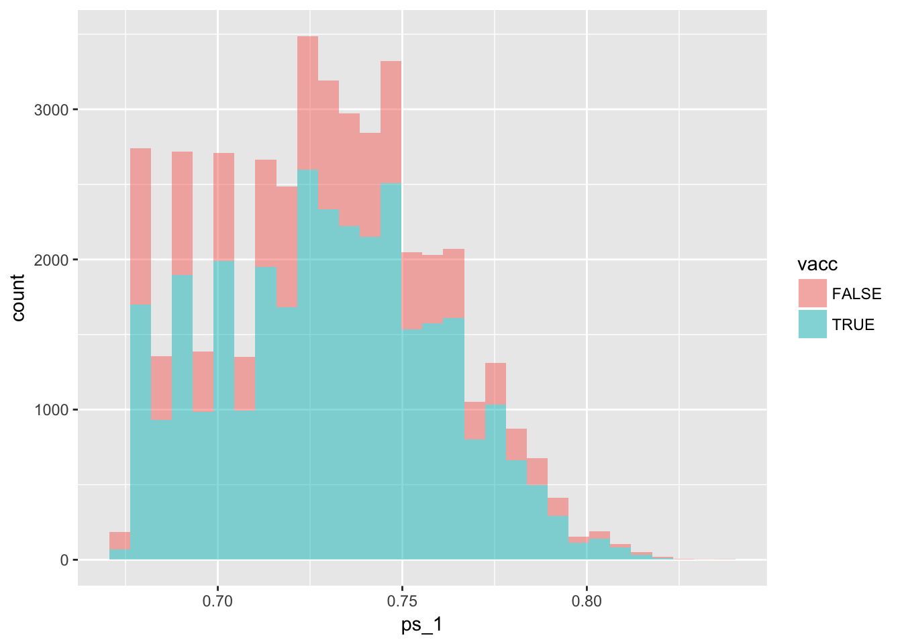
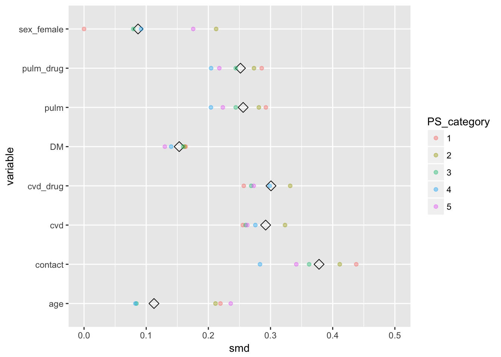
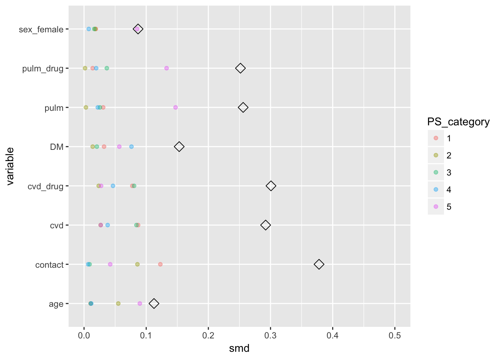
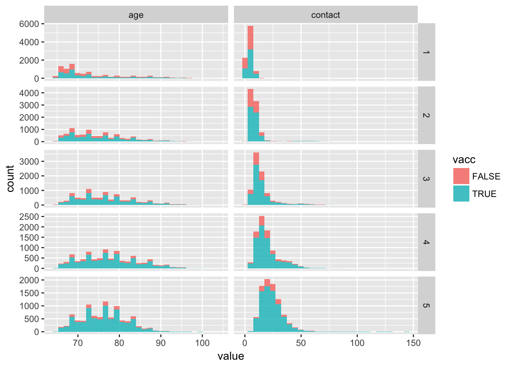
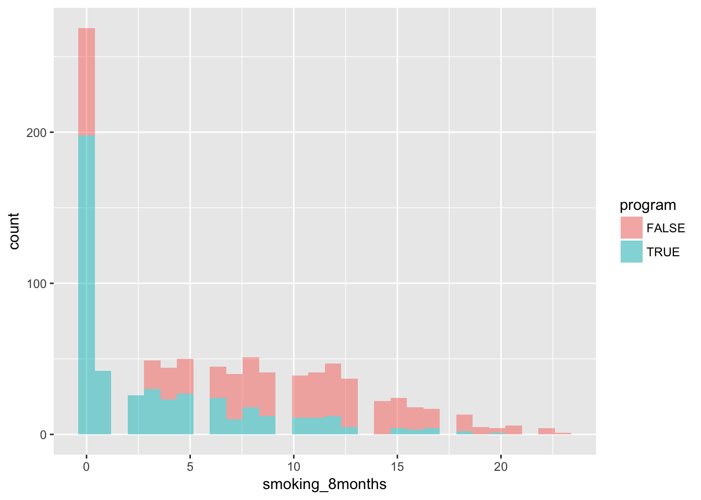
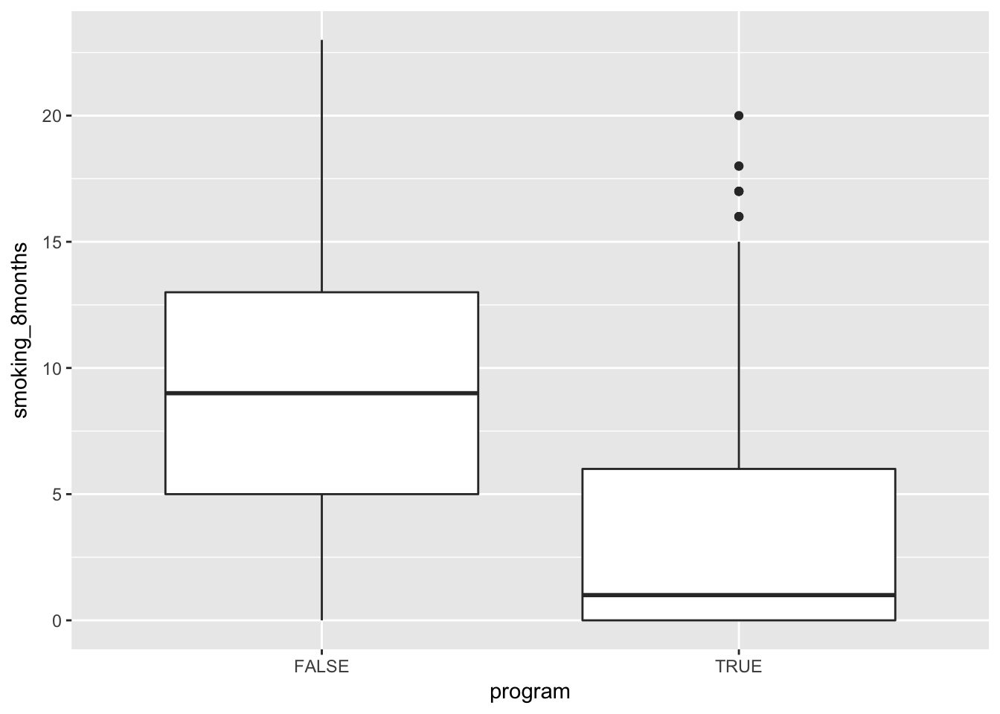
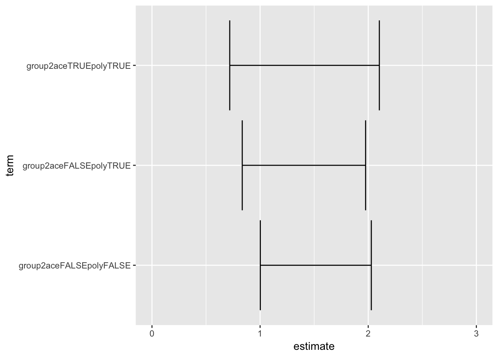

Last updated: 2018-02-22
Code version: d3c2fe9
Load some handy packages
require(broom)
require(purrr)
require(dplyr)
require(data.table)
require(ggplot2)
require(epistats)
require(here) # for managing working directory
require(magrittr)
require(haven) # for importing from spssThe aim of this exercise is to illustrate the causal structure of confounding using simulated data.
Draw a DAG of confounding. Indicate the confounder as ‘C’, the exposure as ‘X’, and the outcome as ‘Y’. Furthermore, name the arrows as follows: βYX is the arrow from X to Y, βXC is the arrow from C to X, and βYC is the arrow from C to Y.
require(DiagrammeR)
dag1 <- "digraph dag1 {
graph [layout = dot]
node[shape = circle]
X; Y; C;
X -> Y [label = 'Byx']
C -> X [label = 'Bxc']
C -> Y [label = 'Byc']
subgraph {
rank = same; X; Y
}
}"
DiagrammeR(dag1, type = "grViz")Let’s make some assumptions about the relations between the different variables, i.e., make assumptions about the values of βYX, βXC, and βYC.
byx = 1.5
bxc = 1.1
byc = 1.3Now, let’s simulate some data to illustrate confounding, and confounding adjustment. The illustrated data will resemble the DAG you just drew. Let’s assume all data are normally distributed.
Sample C (e.g., 100,000 observations) from a normal distribution, with mean 0 and standard deviation 1:
set.seed(12345)
C <- rnorm(100000, 0, 1)Define the relation between C and X (based on your DAG), e.g., βXC = 2:
See 2.
X <- bxc * C + rnorm(100000, 0, 1)Define the relation between C and Y, and C and X (based on your DAG), e.g., βYC = 1.5 and βYX = 1.0: Beta.yc <- 1.5 Beta.yx <- 1
See 2.
- Generate Y, based on C and X plus some random error:
Y <- byx * X + byc * C + rnorm(100000, 0, 1)Now, you can fit a linear model, regressing Y on X (‘unadjusted’) or regressing Y on X and C (‘adjusted’):
fit0 <- lm(Y~X)
fit1 <- lm(Y~X + C)
list(unadjusted = fit0, adjusted = fit1) %>% map_df(tidy, .id = "model") model term estimate std.error statistic p.value
1 unadjusted (Intercept) -0.0002552413 0.004197753 -0.06080426 0.9515152
2 unadjusted X 2.1483268085 0.002820318 761.73217488 0.0000000
3 adjusted (Intercept) 0.0015838455 0.003159298 0.50132823 0.6161412
4 adjusted X 1.5026955136 0.003154558 476.35689813 0.0000000
5 adjusted C 1.2985982410 0.004693741 276.66595192 0.0000000Look at the estimates of the effect of X on Y from the two linear models. How do these relate to the DAG?
The unadjusted model has overestimated the coefficient for X, since all lines are positive.
The adjusted model found the true values
Take different values for βYX, βXC, and βYC (including zero, or negative values) and evaluate the impact in terms of discrepancy between the 2 models from step 4. Can you explain what you observe?
byx = 1.5
bxc = -1.1
byc = 1.3
set.seed(12345)
C <- rnorm(100000, 0, 1)
X <- bxc * C + rnorm(100000, 0, 1)
Y <- byx * X + byc * C + rnorm(100000, 0, 1)
fit0 <- lm(Y~X)
fit1 <- lm(Y~X + C)
list(unadjusted = fit0, adjusted = fit1) %>% map_df(tidy, .id = "model") model term estimate std.error statistic p.value
1 unadjusted (Intercept) 0.004397018 0.004207348 1.0450806 0.2959882
2 unadjusted X 0.854037887 0.002828755 301.9130022 0.0000000
3 adjusted (Intercept) 0.001583845 0.003159298 0.5013282 0.6161412
4 adjusted X 1.502695514 0.003154558 476.3568981 0.0000000
5 adjusted C 1.304528371 0.004690452 278.1242430 0.0000000Now the effect of X on Y was underestimated in the unadjusted model, since one of the arrows was negative (and the other ones positive, so the sign of the product is negative)
The aim of this exercise is to illustrate the bias due to conditioning on an intermediate.
Draw a DAG of an exposure (‘X’), an outcome (‘Y’), and an intermediate (‘M’) of the relation between X and Y. Name the arrows as follows: βYX is the direct arrow from X to Y, βMX is the arrow from X to M, and βYM is the arrow from M to Y.
require(DiagrammeR)
dag2 <- "digraph dag2 {
graph [layout = dot]
node[shape = circle]
X; M; Y;
X -> Y [label = 'Byx']
X -> M [label = 'Bmx']
M -> Y [label = 'Bym']
subgraph {
rank = same; X; Y; M
}
}"
DiagrammeR(dag2, type = "grViz")Make some assumptions about the relations between the different variables, i.e., make assumptions about the values of βYX, βMX, and βYM.
byx <- 1.5
bym <- 1.2
bmx <- 1.1Sample X (e.g., 100,000 observations) from a normal distribution, with mean 0 and standard deviation 1: b. Define the relation between X and M (based on your DAG), e.g., βMX = 2: c. Generate M, based on X plus some random error: d. Define the relation between X and Y, and M and Y (based on your DAG), e.g., βYX = 1.0 and βYM = 0.5: e. Generate Y, based on X and M plus some random error:
set.seed(12345)
X <- rnorm(100000, 0, 1)
M <- bmx * X + rnorm(100000, 0, 1)
Y <- byx * X + bym * M + rnorm(100000, 0, 1)fit0 <- lm(Y~X)
fit1 <- lm(Y~X + M)
list(unadjusted = fit0, adjusted = fit1) %>% map_df(tidy, .id = "model") model term estimate std.error statistic p.value
1 unadjusted (Intercept) 0.005904210 0.004948668 1.1930909 0.2328366
2 unadjusted X 2.822411056 0.004947113 570.5167726 0.0000000
3 adjusted (Intercept) 0.001583845 0.003159298 0.5013282 0.6161412
4 adjusted X 1.498598241 0.004693741 319.2758898 0.0000000
5 adjusted M 1.202695514 0.003154558 381.2564149 0.0000000Look at the estimates of the effect of X on Y from the two linear models. How do these relate to the DAG?
In the unadjusted model, the direct effect of X on Y is overestimated, since it is partially medieated by M. In the adjusted model we get the true effects
Take different values for βYX, βMX, and βYM (including zero, or negative values) and evaluate the impact in terms of discrepancy between the 2 models from step 4. Can you explain what you observe?
byx <- 1.5
bym <- -1.2
bmx <- 1.1
set.seed(12345)
X <- rnorm(100000, 0, 1)
M <- bmx * X + rnorm(100000, 0, 1)
Y <- byx * X + bym * M + rnorm(100000, 0, 1)
fit0 <- lm(Y~X)
fit1 <- lm(Y~X + M)
list(unadjusted = fit0, adjusted = fit1) %>% map_df(tidy, .id = "model") model term estimate std.error statistic
1 unadjusted (Intercept) -0.002717154 0.004935538 -0.5505284
2 unadjusted X 0.180719356 0.004933988 36.6274428
3 adjusted (Intercept) 0.001583845 0.003159298 0.5013282
4 adjusted X 1.498598241 0.004693741 319.2758898
5 adjusted M -1.197304486 0.003154558 -379.5474506
p.value
1 5.819583e-01
2 9.108075e-292
3 6.161412e-01
4 0.000000e+00
5 0.000000e+00Just as before, the effect of X on Y is underestimated in the unadjusted model
The aim of this exercise is to illustrate collider stratification bias.
Draw a DAG of an exposure (‘X’), an outcome (‘Y’), and a common effect (‘S’). Name the arrows as follows: βYX is the arrow from X to Y, βSX is the arrow from X to S, and βSY is the arrow from Y to S.
require(DiagrammeR)
dag3 <- "digraph {
graph [layout = dot]
node[shape = circle]
X; Y; S;
X -> Y [label = 'Byx']
X -> S [label = 'Bsx']
Y -> S [label = 'Bsy']
subgraph {
rank = same; X; Y
}
}"
DiagrammeR(dag3, type = "grViz")Make some assumptions about the relations between the different variables, i.e., make assumptions about the values of βYX, βSX, and βSY.
byx = 1.5
bsx = 1.4
bsy = 1.6Simulate some data based on the DAG you just drew. Let’s assume all data are normally distributed.
- Sample X (e.g., 100,000 observations) from a normal distribution, with mean 0 and standard deviation 1:
- Define the relation between X and Y (based on your DAG), e.g., βYX = 0.67:
- Generate Y, based on X plus some random error:
- Define the relation between X and S, and Y and S (based on your DAG), e.g., βSY = 2.0 and βSY = 1.0:
- Generate S, based on X and Y plus some random error:
set.seed(12345)
X <- rnorm(100000, 0, 1)
Y <- byx * X + rnorm(100000, 0, 1)
S <- bsx * X + bsy * Y + rnorm(10000, 0, 1)Fit a linear model, regressing Y on X (‘unadjusted’) or regressing Y on X and S (‘adjusted’):
fit0 <- lm(Y~X)
fit1 <- lm(Y~X + S)
list(unadjusted = fit0, adjusted = fit1) %>% map_df(tidy, .id = "model") model term estimate std.error statistic p.value
1 unadjusted (Intercept) 0.0035922351 0.0031670408 1.1342560 0.2566899
2 unadjusted X 1.5007048746 0.0031660461 473.9996976 0.0000000
3 adjusted (Intercept) -0.0007969837 0.0016715409 -0.4767958 0.6335086
4 adjusted X -0.2099862821 0.0037539097 -55.9380223 0.0000000
5 adjusted S 0.4500441703 0.0008843321 508.9085305 0.0000000Look at the estimates of the effect of X on Y from the two linear models. How do these relate to the DAG?
Now the unadjusted model find the true value, since S is a collider of X and Y
In the adjusted model, byx even switched sign
Take different values for βYX, βSX, and βSY (including zero, or negative values) and evaluate the impact in terms of discrepancy between the 2 models from step 4. Can you explain what you observe?
byx = 1.5
bsx = -1.1
bsy = 1.6
set.seed(12345)
X <- rnorm(100000, 0, 1)
Y <- byx * X + rnorm(100000, 0, 1)
S <- bsx * X + bsy * Y + rnorm(10000, 0, 1)
fit0 <- lm(Y~X)
fit1 <- lm(Y~X + S)
list(unadjusted = fit0, adjusted = fit1) %>% map_df(tidy, .id = "model") model term estimate std.error statistic p.value
1 unadjusted (Intercept) 0.0035922351 0.0031670408 1.1342560 0.2566899
2 unadjusted X 1.5007048746 0.0031660461 473.9996976 0.0000000
3 adjusted (Intercept) -0.0007969837 0.0016715409 -0.4767958 0.6335086
4 adjusted X 0.9151241436 0.0020288515 451.0552617 0.0000000
5 adjusted S 0.4500441703 0.0008843321 508.9085305 0.0000000With negative bsx, byx did not switch sign in the adjusted model
byx = 1.5
bsx = 0
bsy = 1.6
set.seed(12345)
X <- rnorm(100000, 0, 1)
Y <- byx * X + rnorm(100000, 0, 1)
S <- bsx * X + bsy * Y + rnorm(10000, 0, 1)
fit0 <- lm(Y~X)
fit1 <- lm(Y~X + S)
list(unadjusted = fit0, adjusted = fit1) %>% map_df(tidy, .id = "model") model term estimate std.error statistic p.value
1 unadjusted (Intercept) 0.0035922351 0.0031670408 1.1342560 0.2566899
2 unadjusted X 1.5007048746 0.0031660461 473.9996976 0.0000000
3 adjusted (Intercept) -0.0007969837 0.0016715409 -0.4767958 0.6335086
4 adjusted X 0.4200755563 0.0027020650 155.4646367 0.0000000
5 adjusted S 0.4500441703 0.0008843321 508.9085305 0.0000000With bsx = 0, S is no longer a collider. In the adjusted model, byx is too low. Part of the variation in X is now passed to S through Y. Including S in the model somehow sucks a part of the true byx into bsy, shrinking byx
The aim of this exercise is to combine the concepts discussed above. 1. Draw a DAG, including at least an exposure (‘X’) and an outcome (‘Y’). You may consider to add confounder(s), intermediate(s) and/or a common effect (‘S’) of X and Y. Name all the arrows in your DAG. Tip: do not start with a very complex DAG, but build it up in (small) steps. 2. In your DAG, identify colliders and intermediates (i.e., the variables that you don’t want to control for) as well as confounders (i.e., the variables that you do want to control for). 3. Apply the tools that you used in the previous exercises and assess the impact of omitting a confounder from the analytical model, or including e.g. a collider. 4. Draw a DAG and generate the data. Provide a fellow student with the data and let him/her do the analysis. Does (s)he come up with the right estimate? In addition, also provide the DAG. Will (s)he change his/her analysis plan?
This one was skipped.
Introduction In this exercise, you will use data of a study that aimed to assess whether annual influenza vaccination reduces mortality risk among elderly (i.e., people aged >65 years). The data consists of observations of eligible subjects who did, or did not, receive the annual influenza vaccine. The endpoint in this study is mortality during the influenza epidemic period (which usually starts 4 to 8 weeks after vaccination). Note that the vaccine was not randomly allocated; rather vaccination status may depend on characteristics of the participants in the study.
Code book (data_PS.txt) Variable name Description Values Vac Influenza vaccination status 0 = unvaccinated 1 = vaccinated Age Age (years) Continuous Sex Sex 0 = male 1 = female Cvd Cardiovascular disease 0 = absent 1 = present cvd_drug Cardiovascular drug use 0 = absent 1 = present pulm Pulmonary disease 0 = absent 1 = present pulm_drug Pulmonary drug use 0 = absent 1 = present DM Diabetes Mellitus 0 = absent 1 = present Contact Number of GP contacts in 12 months prior to start of study continuous Death Mortality status 0 = absent 1 = present Step 1. Think before you act:
Look at the variables measured in this study (i.e., the code book), and plan your analysis (draw a DAG, define exposure, outcome, confounders, and the model to relate exposure to outcome, etc.)
The target relationship is Vac vs Death.
Several factor may be considered confounders (e.g. causally related to exposure and outcome)
Possible effect modifiers are
Hierarchies
What’s hard to put in:
require(DiagrammeR)
dag_PS <- "digraph {
graph [layout = dot]
node[shape = circle]
Vac; Death; Age; Sex; Cvd; cvd_drug; pulm; pulm_drug; DM; Contact
Vac -> Death
Age -> Death
Age -> Vac
Age -> Cvd
Age -> pulm
Age -> DM
Age -> Contact
Sex -> Death
Sex -> Vac
Sex -> Cvd
Sex -> pulm
Sex -> DM
Sex -> Contact
Cvd -> Vac
Cvd -> Death
pulm -> Vac
pulm -> Death
DM -> Death
DM -> Vac
Contact -> Vac
Contact -> Death
subgraph {
rank = same; Vac; Death
}
}"
DiagrammeR(dag_PS, type = "grViz")df <- read.table(here("data", "data_PS.txt"), sep = "\t")
str(df)'data.frame': 44418 obs. of 10 variables:
$ vacc : int 1 1 1 1 1 1 1 1 1 1 ...
$ age : int 66 73 75 76 77 78 80 81 66 67 ...
$ sex : int 0 1 1 1 1 1 1 1 0 0 ...
$ cvd : int 0 1 1 1 1 1 1 1 0 0 ...
$ cvd_drug : int 0 1 1 1 1 1 1 1 0 0 ...
$ pulm : int 1 0 0 0 0 0 0 0 0 0 ...
$ pulm_drug: int 0 0 0 0 0 0 0 0 0 0 ...
$ DM : int 0 0 0 0 0 0 0 0 0 0 ...
$ contact : int 27 4 8 7 7 5 9 17 10 13 ...
$ death : int 0 0 0 0 0 0 0 0 0 0 ...Let’s curate a few 0 - 1 variables as logical vectors (true vs false) so that R treats them right internally in all functions
logical_vars <- c("vacc", "sex", "cvd", "cvd_drug", "pulm", "pulm_drug", "DM", "death")
df %<>%
mutate_at(vars(logical_vars), as.logical)
str(df)'data.frame': 44418 obs. of 10 variables:
$ vacc : logi TRUE TRUE TRUE TRUE TRUE TRUE ...
$ age : int 66 73 75 76 77 78 80 81 66 67 ...
$ sex : logi FALSE TRUE TRUE TRUE TRUE TRUE ...
$ cvd : logi FALSE TRUE TRUE TRUE TRUE TRUE ...
$ cvd_drug : logi FALSE TRUE TRUE TRUE TRUE TRUE ...
$ pulm : logi TRUE FALSE FALSE FALSE FALSE FALSE ...
$ pulm_drug: logi FALSE FALSE FALSE FALSE FALSE FALSE ...
$ DM : logi FALSE FALSE FALSE FALSE FALSE FALSE ...
$ contact : int 27 4 8 7 7 5 9 17 10 13 ...
$ death : logi FALSE FALSE FALSE FALSE FALSE FALSE ...Rename sex to a more sensible name
df %<>%
rename(sex_female = sex)Store names of original predictive variables in a vector for later use
orig_vars <- setdiff(names(df), "death")
orig_vars[1] "vacc" "age" "sex_female" "cvd" "cvd_drug"
[6] "pulm" "pulm_drug" "DM" "contact" summary(df) vacc age sex_female cvd
Mode :logical Min. : 65.00 Mode :logical Mode :logical
FALSE:12030 1st Qu.: 70.00 FALSE:16974 FALSE:22791
TRUE :32388 Median : 75.00 TRUE :27444 TRUE :21627
Mean : 75.66
3rd Qu.: 80.00
Max. :104.00
cvd_drug pulm pulm_drug DM
Mode :logical Mode :logical Mode :logical Mode :logical
FALSE:23543 FALSE:39000 FALSE:39427 FALSE:41553
TRUE :20875 TRUE :5418 TRUE :4991 TRUE :2865
contact death
Min. : 2.00 Mode :logical
1st Qu.: 6.00 FALSE:44039
Median : 12.00 TRUE :379
Mean : 14.68
3rd Qu.: 19.00
Max. :146.00 Construct a propensity score:
Create a table of the distributions of the confounding variables by exposure status. You may use commands such as: mean(age[vacc==0]); mean(age[vacc==1]) table(vacc,sex)
df %>%
group_by(vacc) %>%
summarize(mean_age = mean(age), fraction_female = mean(sex_female))# A tibble: 2 x 3
vacc mean_age fraction_female
<lgl> <dbl> <dbl>
1 F 75.1 0.648
2 T 75.9 0.606tableone::CreateTableOne(data = df, strata = "vacc", test = F) Stratified by vacc
FALSE TRUE
n 12030 32388
vacc = TRUE (%) 0 ( 0.0) 32388 (100.0)
age (mean (sd)) 75.07 (7.37) 75.88 (6.86)
sex_female = TRUE (%) 7801 (64.8) 19643 ( 60.6)
cvd = TRUE (%) 4595 (38.2) 17032 ( 52.6)
cvd_drug = TRUE (%) 4360 (36.2) 16515 ( 51.0)
pulm = TRUE (%) 787 ( 6.5) 4631 ( 14.3)
pulm_drug = TRUE (%) 708 ( 5.9) 4283 ( 13.2)
DM = TRUE (%) 467 ( 3.9) 2398 ( 7.4)
contact (mean (sd)) 11.56 (10.69) 15.83 (11.87)
death = TRUE (%) 113 ( 0.9) 266 ( 0.8) What is the odds ratio of the crude (unadjusted) association between vaccination status and mortality?
fit <- glm(death ~ vacc, family=‘binomial’) log.or <- fit$coef[2] se.log.or <- sqrt(diag(vcov(fit))[2]) exp(c(log.or, log.or - 1.96se.log.or, log.or + 1.96se.log.or))
Let’s use confint to get likelihood profile confidence intervals
fit0 <- glm(death ~ vacc, family = 'binomial', data = df)
summary(fit0)
Call:
glm(formula = death ~ vacc, family = "binomial", data = df)
Deviance Residuals:
Min 1Q Median 3Q Max
-0.1374 -0.1374 -0.1284 -0.1284 3.0991
Coefficients:
Estimate Std. Error z value Pr(>|z|)
(Intercept) -4.65833 0.09452 -49.286 <2e-16 ***
vaccTRUE -0.13547 0.11280 -1.201 0.23
---
Signif. codes: 0 '***' 0.001 '**' 0.01 '*' 0.05 '.' 0.1 ' ' 1
(Dispersion parameter for binomial family taken to be 1)
Null deviance: 4365.8 on 44417 degrees of freedom
Residual deviance: 4364.3 on 44416 degrees of freedom
AIC: 4368.3
Number of Fisher Scoring iterations: 7confint(fit0) 2.5 % 97.5 %
(Intercept) -4.8493808 -4.47853095
vaccTRUE -0.3535467 0.08908945No significant effect in unadjusted analysis
A propensity score can be constructed by means of a multivariable regression model, predicting exposure status given confounders. What is the dependent variable (outcome variable) of this model? What are the independent variables of this model? What kind of regression model is most convenient for this study?
Logistic, since exposure is binary
Independent variables can be all covariates that are not the outcome (Death), and possibly interactions and non-linear transformations of these
Based on your answer to the previous question construct a propensity score. For example:
ps_fit1 <- glm(vacc ~ age + sex_female, family = "binomial", data = df)You can obtain the predicted value of the model (i.e., probability of the determinant, given the potential confounders): PS <- fit$fitted.values
Let’s keep the data nicely together in the data.frame
df %<>%
mutate(ps_1 = ps_fit1$fitted.values)What is the mean propensity score of those who are vaccinated? And what is the mean propensity score of those who are not vaccinated? Is this like you would expect?
df %>%
group_by(vacc) %>%
summarize(mean_ps = mean(ps_1))# A tibble: 2 x 2
vacc mean_ps
<lgl> <dbl>
1 F 0.726
2 T 0.730The propensity scores are pretty close together. Based on the baseline table we see that age and sex are distributed pretty equally amongst vaccinated and unvaccinated subjects, so it makes sense that the propensity score does not work too well
Let’s look at the distributions
df %>%
ggplot(aes(x = ps_1, fill = vacc)) +
geom_histogram(alpha = .5)
The primary goal of a propensity score is to balance confounder characteristics among those exposed and those unexposed to the determinant. Balance can be assessed e.g. within quintiles of the propensity score:
n.cat <- 5 # no. categories to split PS PS_cat <- ceiling(rank(PS)*n.cat/length(PS)) # split PS for (i in 1:max(PS_cat)){ print(sapply(split(age[PS_cat==i],vacc[PS_cat==i]),mean))}
n_cat <- 5
df %<>%
mutate(ps_range = cut(ps_1,
breaks = quantile(ps_1,
probs = seq(0, 1, length.out = n_cat + 1)),
include.lowest = T, ordered_result = T),
ps_cat = as.numeric(ps_range))
df %>%
group_by(ps_cat, ps_range) %>%
summarize(mean(vacc), mean(age), mean(sex_female), mean(pulm))# A tibble: 5 x 6
# Groups: ps_cat [?]
ps_cat ps_range `mean(vacc)` `mean(age)` `mean(sex_femal… `mean(pulm)`
<dbl> <ord> <dbl> <dbl> <dbl> <dbl>
1 1.00 [0.672,0.… 0.674 68.9 1.00 0.104
2 2.00 (0.7,0.72… 0.723 74.1 0.863 0.107
3 3.00 (0.723,0.… 0.737 74.3 0.490 0.117
4 4.00 (0.737,0.… 0.757 77.8 0.390 0.137
5 5.00 (0.756,0.… 0.763 84.4 0.275 0.150Donstruct a table of the distributions of the confounding variables by exposure status using only those subject whose PS lies within the third category of the PS. Compare the balance of confounding variables between exposure groups in this table with that in the table of the confounders by exposure status that was constructed using all subjects. In which table are the exposure groups more comparable?
tableone::CreateTableOne(data = df %>% filter(ps_cat == 3), strata = "vacc", test = F) Stratified by vacc
FALSE TRUE
n 2223 6242
vacc = TRUE (%) 0 ( 0.0) 6242 (100.0)
age (mean (sd)) 73.94 (6.12) 74.45 (6.06)
sex_female = TRUE (%) 1024 ( 46.1) 3122 ( 50.0)
cvd = TRUE (%) 893 ( 40.2) 3310 ( 53.0)
cvd_drug = TRUE (%) 852 ( 38.3) 3220 ( 51.6)
pulm = TRUE (%) 141 ( 6.3) 849 ( 13.6)
pulm_drug = TRUE (%) 126 ( 5.7) 790 ( 12.7)
DM = TRUE (%) 94 ( 4.2) 502 ( 8.0)
contact (mean (sd)) 11.15 (10.69) 15.14 (11.36)
death = TRUE (%) 16 ( 0.7) 33 ( 0.5)
ps_1 (mean (sd)) 0.73 (0.00) 0.73 (0.00)
ps_range (%)
[0.672,0.7] 0 ( 0.0) 0 ( 0.0)
(0.7,0.723] 0 ( 0.0) 0 ( 0.0)
(0.723,0.737] 2223 (100.0) 6242 (100.0)
(0.737,0.756] 0 ( 0.0) 0 ( 0.0)
(0.756,0.836] 0 ( 0.0) 0 ( 0.0)
ps_cat (mean (sd)) 3.00 (0.00) 3.00 (0.00) Not a whole lot better when compared to earlier
Estimate the effect of influenza vaccination on mortality risk
There are different ways of using the PS to control for confounding. Here we will include the PS as a continuous covariate and as a categorical covariate in the model regressing outcome on exposure and PS:
fit <- glm(death ~ vacc + PS, family=‘binomial’) log.or <- fit$coef[2] se.log.or <- sqrt(diag(vcov(fit))[2]) exp(c(log.or, log.or - 1.96se.log.or, log.or + 1.96se.log.or))
fit <- glm(death ~ vacc + factor(PS_cat), family=‘binomial’) log.or <- fit$coef[2] se.log.or <- sqrt(diag(vcov(fit))[2]) exp(c(log.or, log.or - 1.96se.log.or, log.or + 1.96se.log.or))
fit_1 <-glm(death ~ vacc + ps_1, family = "binomial", data = df)
summary(fit_1)
Call:
glm(formula = death ~ vacc + ps_1, family = "binomial", data = df)
Deviance Residuals:
Min 1Q Median 3Q Max
-0.4210 -0.1484 -0.1166 -0.0883 3.5402
Coefficients:
Estimate Std. Error z value Pr(>|z|)
(Intercept) -21.5561 1.3049 -16.519 <2e-16 ***
vaccTRUE -0.2157 0.1132 -1.906 0.0567 .
ps_1 22.9303 1.7395 13.182 <2e-16 ***
---
Signif. codes: 0 '***' 0.001 '**' 0.01 '*' 0.05 '.' 0.1 ' ' 1
(Dispersion parameter for binomial family taken to be 1)
Null deviance: 4365.8 on 44417 degrees of freedom
Residual deviance: 4184.9 on 44415 degrees of freedom
AIC: 4190.9
Number of Fisher Scoring iterations: 8confint(fit_1) 2.5 % 97.5 %
(Intercept) -24.1293723 -19.01318274
vaccTRUE -0.4345128 0.00958604
ps_1 19.5331364 26.35332361fit_2 <-glm(death ~ vacc + factor(ps_cat), family = "binomial", data = df)
summary(fit_2)
Call:
glm(formula = death ~ vacc + factor(ps_cat), family = "binomial",
data = df)
Deviance Residuals:
Min 1Q Median 3Q Max
-0.2162 -0.1418 -0.1043 -0.1018 3.4778
Coefficients:
Estimate Std. Error z value Pr(>|z|)
(Intercept) -5.8154 0.2123 -27.398 < 2e-16 ***
vaccTRUE -0.2298 0.1133 -2.029 0.042472 *
factor(ps_cat)2 0.7860 0.2454 3.202 0.001363 **
factor(ps_cat)3 0.8335 0.2463 3.384 0.000715 ***
factor(ps_cat)4 1.4502 0.2252 6.439 1.2e-10 ***
factor(ps_cat)5 2.0707 0.2160 9.589 < 2e-16 ***
---
Signif. codes: 0 '***' 0.001 '**' 0.01 '*' 0.05 '.' 0.1 ' ' 1
(Dispersion parameter for binomial family taken to be 1)
Null deviance: 4365.8 on 44417 degrees of freedom
Residual deviance: 4195.9 on 44412 degrees of freedom
AIC: 4207.9
Number of Fisher Scoring iterations: 8confint(fit_2) 2.5 % 97.5 %
(Intercept) -6.2567028 -5.421433710
vaccTRUE -0.4487724 -0.004363489
factor(ps_cat)2 0.3153528 1.282339288
factor(ps_cat)3 0.3608170 1.331347980
factor(ps_cat)4 1.0257024 1.912630090
factor(ps_cat)5 1.6671111 2.517402559As a comparison, estimate the relation between vaccination status and mortality and adjust for confounding by including all confounders as covariates in the model.
fit_3 <- glm(reformulate(orig_vars, response = "death"), data = df, family = "binomial")
summary(fit_3)
Call:
glm(formula = reformulate(orig_vars, response = "death"), family = "binomial",
data = df)
Deviance Residuals:
Min 1Q Median 3Q Max
-1.7894 -0.1278 -0.0936 -0.0724 3.6549
Coefficients:
Estimate Std. Error z value Pr(>|z|)
(Intercept) -10.753394 0.554101 -19.407 < 2e-16 ***
vaccTRUE -0.487711 0.117305 -4.158 3.22e-05 ***
age 0.071497 0.006961 10.271 < 2e-16 ***
sex_femaleTRUE -0.685423 0.109941 -6.234 4.53e-10 ***
cvdTRUE 0.662615 0.300484 2.205 0.0274 *
cvd_drugTRUE -0.582017 0.294435 -1.977 0.0481 *
pulmTRUE 0.690273 0.369852 1.866 0.0620 .
pulm_drugTRUE -0.373648 0.382207 -0.978 0.3283
DMTRUE 0.175138 0.172056 1.018 0.3087
contact 0.049913 0.002742 18.204 < 2e-16 ***
---
Signif. codes: 0 '***' 0.001 '**' 0.01 '*' 0.05 '.' 0.1 ' ' 1
(Dispersion parameter for binomial family taken to be 1)
Null deviance: 4365.8 on 44417 degrees of freedom
Residual deviance: 3816.7 on 44408 degrees of freedom
AIC: 3836.7
Number of Fisher Scoring iterations: 8The estimated effect of vaccination on death is greater when including all covariates
How do all these odds ratios compare to the odds ratio that was estimated without adjustment for confounding?
fit_0 <- glm(death ~ vacc, data = df, family = "binomial")
summary(fit_0)
Call:
glm(formula = death ~ vacc, family = "binomial", data = df)
Deviance Residuals:
Min 1Q Median 3Q Max
-0.1374 -0.1374 -0.1284 -0.1284 3.0991
Coefficients:
Estimate Std. Error z value Pr(>|z|)
(Intercept) -4.65833 0.09452 -49.286 <2e-16 ***
vaccTRUE -0.13547 0.11280 -1.201 0.23
---
Signif. codes: 0 '***' 0.001 '**' 0.01 '*' 0.05 '.' 0.1 ' ' 1
(Dispersion parameter for binomial family taken to be 1)
Null deviance: 4365.8 on 44417 degrees of freedom
Residual deviance: 4364.3 on 44416 degrees of freedom
AIC: 4368.3
Number of Fisher Scoring iterations: 7In the unadjusted model, the log-odds for vaccination is closer to the null value (smaller effect on death)
What are potential advantages of PS analysis compared to including all confounders separately in a multivariable logistic regression model?
Checks during model building; possible to use more covariates in a setting with rare events but frequnet exposure
How could the balance of confounding variables between exposure groups within strata of the PS possibly be improved?
By correlations between the covariates and the covariates used for the PS
Could you think of ways of (graphically) summarizing the balance of confounders for subjects with the same PS?
Yes, for example calculate the standardized difference and plot these
First for all data
require(tableone)
diffs_overall <- CreateTableOne(vars = setdiff(orig_vars, "vacc"), strata = "vacc", data = df, test = F, smd = T) %>%
ExtractSmd()
diffs_overall <- data.frame(variable = rownames(diffs_overall),
smd = as.numeric(diffs_overall))The in each PS quantile
diffs_quantiles <- split(df, df$ps_cat) %>%
map_df(function(data) CreateTableOne(vars = setdiff(orig_vars, "vacc"), strata = "vacc", data = data, test = F, smd = T) %>%
ExtractSmd())
diffs_melted <- melt(diffs_quantiles, variable.name = "PS_category", value.name = "smd")
diffs_melted$variable <- (diffs_overall$variable)Now to plot
diffs_overall %>%
ggplot(aes(x = smd, y = variable)) +
geom_point(shape = 5, size = 3) +
lims(x = c(0,.5)) +
geom_point(data = diffs_melted, aes(x = smd, y = variable, col = PS_category),
alpha = .4)
We observe that the SMD within the PS categories (the colored dots), are not my closer to 0 than the overall. So the PS does not seem to equal out the distributions of covariates for accross vaccination status
Maybe this was because we used a very simple model for propensity scoring.
table(df$vacc)
FALSE TRUE
12030 32388 We have 12030 in the smallest group of treatment, so we can potential include 1203 terms.
Let’s go all out and use all possible confounders, including up to cubic terms, and all third order interactions. Of course, the cubic terms of the binary variables are senseless, but this way we can get all terms with 2 lines of code
# ps_fit2 <- glm(vacc ~ (age + sex_female + cvd + cvd_drug + pulm + pulm_drug + DM + contact)^3,
# data = df, family = "binomial")
ps_fit2 <- glm(vacc ~ polym(age, sex_female, cvd, cvd_drug, pulm, pulm_drug, DM, contact,
degree = 3, raw = T),
data = df, family = "binomial")Warning: glm.fit: fitted probabilities numerically 0 or 1 occurredThis takes some time to fit. Let’s see how many terms we included:
length(coef(ps_fit2))[1] 165Well below the threshold. Let’s use this as the new propensity score and do the same calculations
n_cat <- 5
df %<>%
mutate(
ps_2 = ps_fit2$fitted.values,
ps_2_range = cut(ps_2,
breaks = quantile(ps_2,
probs = seq(0, 1, length.out = n_cat + 1)),
include.lowest = T, ordered_result = T),
ps_2_cat = as.numeric(ps_2_range))
diffs_quantiles_2 <- split(df, df$ps_2_cat) %>%
map_df(function(data) CreateTableOne(vars = setdiff(orig_vars, "vacc"), strata = "vacc", data = data, test = F, smd = T) %>%
ExtractSmd())
diffs_melted_2 <- melt(diffs_quantiles_2, variable.name = "PS_category", value.name = "smd")
diffs_melted_2$variable <- (diffs_overall$variable)Now to plot
diffs_overall %>%
ggplot(aes(x = smd, y = variable)) +
geom_point(shape = 5, size = 3) +
lims(x = c(0,.5)) +
geom_point(data = diffs_melted_2, aes(x = smd, y = variable, col = PS_category),
alpha = .4)
Now we observe that the confounder distributions within the propensity score strata are a lot more alike. However, most covariates are binary, which are not very informative to plot.
df %>%
select(age, contact, ps_2_cat, vacc) %>%
as.data.table() %>%
melt.data.table(id.vars = c("vacc", "ps_2_cat")) %>%
ggplot(aes(x = value, fill = vacc)) +
geom_histogram(alpha = 0.8) +
facet_grid(ps_2_cat ~ variable, scales = "free")
Relative distributions seem equal within the propensity score quantiles
Skipped due to time limitations
Introduction This practical exercise is based on a paper by Sexton and Hebel (Jama 1984). They were interested in the association between maternal smoking and birth weight. In an observational setting, however, extraneous factors might confound the observed association between maternal smoking and infant body weight. Therefore, they designed a randomized controlled trial in which they randomly assigned women to an encouragement program to stop smoking. Thus, pregnant women who smoked either received the advice to stop smoking, or they did not receive such an advice. It was assumed that women who were enrolled in the program would be more likely to stop smoking during pregnancy. In this study the encouragement program is called an instrumental variable.
Code book (data_IV.txt) Variable name Description Values program Allocation to encouragement program 0 = no program 1 = program age Age (years) Continuous education Years of education Continuous height Maternal height (cm) Continuous weight Maternal weight (kg) Continuous N.prev.preg No. previous pregnancies Ordinal low.birthweight History of child with low birth weight 0 = absent 1 = present smoking_rand No. cigarettes smoked per day at time of randomisation Continuous smoking_8m No. cigarettes smoked per day at 8 months gestational age Continuous birth.weight Birth weight (g) Continuous
Look at the variables measured in this study (i.e., the code book), and plan your analysis (draw a DAG, define exposure, outcome, confounders, and the model to relate exposure to outcome, etc.)
require(DiagrammeR)
dag_iv <- "digraph {
graph [layout = dot]
node[shape = circle]
program; birth_weight;
age; eduction; height; weight;
n_prev_preg; low_birthweight;
smoking_rand; smoking_8m;
program -> smoking_8m
smoking_8m -> birth_weight
smoking_rand -> smoking_8m
low_birthweight -> smoking_rand
low_birthweight -> smoking_8m
low_birthweight -> birth_weight
n_prev_preg -> smoking_rand
n_prev_preg -> birth_weight
age -> birth_weight
age -> smoking_rand
age -> smoking_8m
eduction -> smoking_rand
eduction -> smoking_8m
height -> smoking_rand
height -> smoking_8m
weight -> smoking_rand
weight -> smoking_8m
weight -> brith_weight
subgraph {
rank = same; program; smoking_8m; birth_weight
}
}"
DiagrammeR(dag_iv, type = "grViz")Load the data and attach: data <- read.table(“data_IV.txt”, sep=“”) attach(data)
iv <- read.table(here("data", "data_IV.txt"), sep = "\t")Have a quick look: summary(data)
str(iv)'data.frame': 935 obs. of 10 variables:
$ program : int 0 0 0 0 0 0 0 0 0 0 ...
$ age : int 20 25 24 16 12 18 30 31 27 36 ...
$ education : int 13 11 9 13 12 12 13 13 15 11 ...
$ height : int 163 173 152 175 151 165 167 173 173 167 ...
$ weight : int 55 67 52 66 51 55 62 76 67 68 ...
$ N.prev.preg : int 0 0 0 0 3 0 1 0 1 0 ...
$ low.birthweight: int 0 0 0 0 1 0 0 0 0 0 ...
$ smoking_rand : int 12 17 15 12 15 12 12 11 10 14 ...
$ smoking_8months: int 5 18 14 7 3 4 11 6 0 10 ...
$ birth.weight : int 2355 3703 3297 3387 3258 3962 3781 3160 3235 3395 ...Let’s curate a bit
iv %<>%
mutate(
program = as.logical(program),
low.birthweight = as.logical(low.birthweight)
)What is the association between the number of cigarettes smoked per day at 8 months gestational age and birth weight? Explain what this number means. Do you think this is a valid estimate? Why?
fit0 <- lm(birth.weight ~ smoking_8months, data =iv)
summary(fit0)
Call:
lm(formula = birth.weight ~ smoking_8months, data = iv)
Residuals:
Min 1Q Median 3Q Max
-1434.61 -343.13 -4.61 315.17 1395.37
Coefficients:
Estimate Std. Error t value Pr(>|t|)
(Intercept) 3287.611 24.467 134.368 <2e-16 ***
smoking_8months -3.397 2.900 -1.171 0.242
---
Signif. codes: 0 '***' 0.001 '**' 0.01 '*' 0.05 '.' 0.1 ' ' 1
Residual standard error: 510 on 933 degrees of freedom
Multiple R-squared: 0.001469, Adjusted R-squared: 0.0003984
F-statistic: 1.372 on 1 and 933 DF, p-value: 0.2417Smoking more reduces the birth weight, but it is not a significant effect.
It does not take into account confounding variables that affect both smoking and birth weight
Create a table of the distributions of the potential confounding variables by program status. You may use commands such as:
iv %>%
group_by(program) %>%
summarize_all(funs(mean)) %>%
t() [,1] [,2]
program 0.0000000 1.0000000
age 25.0550847 25.2937365
education 12.1250000 12.0043197
height 163.6906780 164.2419006
weight 61.8220339 62.6220302
N.prev.preg 1.2754237 1.2829374
low.birthweight 0.1588983 0.1835853
smoking_rand 11.8474576 11.9632829
smoking_8months 8.9449153 3.3455724
birth.weight 3209.1186441 3325.2850972Which IV assumption can you check using this table?
Pretty equal confounder distributions, only smoking 8 months and birth weight seem to be different. (what we wanted)
What is the association between the advice to stop smoking and the number of cigarettes smoked per day at 8 months gestational age? Explain what this number means. Which IV assumption do you check by this analysis?
lm(smoking_8months ~ program, data = iv) %>% summary()
Call:
lm(formula = smoking_8months ~ program, data = iv)
Residuals:
Min 1Q Median 3Q Max
-8.9449 -3.3456 -0.9449 3.0551 16.6544
Coefficients:
Estimate Std. Error t value Pr(>|t|)
(Intercept) 8.9449 0.2315 38.64 <2e-16 ***
programTRUE -5.5993 0.3290 -17.02 <2e-16 ***
---
Signif. codes: 0 '***' 0.001 '**' 0.01 '*' 0.05 '.' 0.1 ' ' 1
Residual standard error: 5.03 on 933 degrees of freedom
Multiple R-squared: 0.2369, Adjusted R-squared: 0.2361
F-statistic: 289.7 on 1 and 933 DF, p-value: < 2.2e-16Difference in cigarettes, due to being in there program. Although the R-squared is low, so program does not explian much of the variance. You can check that the IV is related to the exposure of interest
In a plot:
iv %>%
ggplot(aes(x = smoking_8months, fill = program)) +
geom_histogram(alpha = 0.5)
In a boxplot:
iv %>%
ggplot(aes(y = smoking_8months, x = program)) +
geom_boxplot()
lm(birth.weight ~ program, data = iv) %>% summary()
Call:
lm(formula = birth.weight ~ program, data = iv)
Residuals:
Min 1Q Median 3Q Max
-1472.29 -331.12 4.88 329.30 1456.88
Coefficients:
Estimate Std. Error t value Pr(>|t|)
(Intercept) 3209.12 23.34 137.489 < 2e-16 ***
programTRUE 116.17 33.17 3.502 0.000483 ***
---
Signif. codes: 0 '***' 0.001 '**' 0.01 '*' 0.05 '.' 0.1 ' ' 1
Residual standard error: 507.1 on 933 degrees of freedom
Multiple R-squared: 0.01298, Adjusted R-squared: 0.01192
F-statistic: 12.27 on 1 and 933 DF, p-value: 0.0004832This is the ‘intention to treat’ effect. So the effect of assigning someone to a program on the birth weight.
Given the two effects of the advice to stop smoking (estimated in the previous two questions), can you estimate the (IV) effect of smoking on birth weight. Explain what this number means.
We have a model for smoking at 8 months (model iv, instrumental variable)
\[smoke_i = \alpha_0 + \alpha_1 * program_i + \nu_i\]
And a model for birthweight based on the program (model intention to treat, itt)
\[birthweight_i = \gamma_0 + \gamma_1 * program_i + \eta_i\]
What we want to know is
\[birthweight_i =\beta_0 + \beta_1*smoke_i+\epsilon_i\]
So we can use the nested models iv and itt
\[birthweight_i = \beta_0 + \beta_1*(\alpha_0 + \alpha_1 * program_i + \nu_i)+\epsilon_i\]
\[=\beta_0 + \beta_1*\alpha_0 + \beta_1*\alpha_1*program_i + \beta_1*\nu_i + \epsilon_i\]
Now we can easily see that
\[\beta_1 = \frac{\gamma_1}{\alpha_1}\]
fit_itt <- lm(birth.weight ~ program, data = iv)
fit_iv <- lm(smoking_8months ~ program, data = iv)
coef(fit_itt)[2] / coef(fit_iv)[2]programTRUE
-20.74644 For each extra cigarette a day, the birthweight goes down with by 20 grams
A faster way of estimating the (IV) effect of smoking on birth weight is:
fit <- lm(smoking_8months ~ program, data = iv)
lm(birth.weight ~ predict(fit), data = iv) %>% summary()
Call:
lm(formula = birth.weight ~ predict(fit), data = iv)
Residuals:
Min 1Q Median 3Q Max
-1472.29 -331.12 4.88 329.30 1456.88
Coefficients:
Estimate Std. Error t value Pr(>|t|)
(Intercept) 3394.694 40.148 84.555 < 2e-16 ***
predict(fit) -20.746 5.924 -3.502 0.000483 ***
---
Signif. codes: 0 '***' 0.001 '**' 0.01 '*' 0.05 '.' 0.1 ' ' 1
Residual standard error: 507.1 on 933 degrees of freedom
Multiple R-squared: 0.01298, Adjusted R-squared: 0.01192
F-statistic: 12.27 on 1 and 933 DF, p-value: 0.0004832Can you explain what is done here?
It directly nests the IV model into the eventual model (see neste model above)
Above, you have estimated the associations between the number of cigarettes smoked per day and birth weight. A pregnant woman, however, might be more interested to know how much weight her baby will gain if she completely stops smoking, as compared to continue smoking.
What proportion of women completely stopped smoking in among those enrolled in the program? And what was this proportion among those in the control group? stop <- 1*(smoking_8months==0) mean(stop[program==1]); mean(stop[program==0])
iv %>%
group_by(program) %>%
summarize(non_smoking_8months =mean(smoking_8months == 0))# A tibble: 2 x 2
program non_smoking_8months
<lgl> <dbl>
1 F 0.150
2 T 0.428How much weight would a baby, on average, gain if a mother stopped smoking? Use the following expression: Or, using R: (mean(birth.weight[program==1])-mean(birth.weight[program==0])) / (mean(stop[program==1]) - mean(stop[program==0]))
We can calculate this directly by doing another IV analysis for totally stopping with smoking, just like above
iv %<>%
mutate(non_smoking_8months = smoking_8months == 0)lm(birth.weight ~
lm(non_smoking_8months ~ program, data = iv)$fitted.values,
data = iv) %>%
summary()
Call:
lm(formula = birth.weight ~ lm(non_smoking_8months ~ program,
data = iv)$fitted.values, data = iv)
Residuals:
Min 1Q Median 3Q Max
-1472.29 -331.12 4.88 329.30 1456.88
Coefficients:
Estimate
(Intercept) 3146.09
lm(non_smoking_8months ~ program, data = iv)$fitted.values 419.04
Std. Error
(Intercept) 38.21
lm(non_smoking_8months ~ program, data = iv)$fitted.values 119.65
t value
(Intercept) 82.338
lm(non_smoking_8months ~ program, data = iv)$fitted.values 3.502
Pr(>|t|)
(Intercept) < 2e-16 ***
lm(non_smoking_8months ~ program, data = iv)$fitted.values 0.000483 ***
---
Signif. codes: 0 '***' 0.001 '**' 0.01 '*' 0.05 '.' 0.1 ' ' 1
Residual standard error: 507.1 on 933 degrees of freedom
Multiple R-squared: 0.01298, Adjusted R-squared: 0.01192
F-statistic: 12.27 on 1 and 933 DF, p-value: 0.0004832So 419
Introduction Observational (i.e., non-randomized) studies on the effects of medical interventions are prone to confounding. Several methods have been proposed to control for measured confounding. The potential impact of an unmeasured confounder on the association under study can be estimated by means of simulations.
Sensitivity analysis of unmeasured confounding will be applied to a study that aimed to assess whether annual influenza vaccination reduces mortality risk among elderly (for details, see computer exercise on propensity score analysis).
Code book (data_PS.txt) Variable name Description Values Vac Influenza vaccination status 0 = unvaccinated 1 = vaccinated Age Age (years) Continuous Sex Sex 0 = male 1 = female Cvd Cardiovascular disease 0 = absent 1 = present cvd_drug Cardiovascular drug use 0 = absent 1 = present pulm Pulmonary disease 0 = absent 1 = present pulm_drug Pulmonary drug use 0 = absent 1 = present DM Diabetes Mellitus 0 = absent 1 = present Contact Number of GP contacts in 12 months prior to start of study continuous Death Mortality status 0 = absent 1 = present
Look at the variables measured in this study (i.e., the code book), and plan your analysis (draw a DAG, define exposure, outcome, confounders, and the model to relate exposure to outcome, etc.). Also think of possible unmeasured confounders.
For DAG, see above
Possible unmeasured confounders are immunodeficiency, smoking
Load the data and attach: data <- read.table(“data_PS.txt”, sep=“”) attach(data)
Have a quick look: summary(data)
As above
df <- read.table(here("data", "data_PS.txt"), sep = "\t")
str(df)'data.frame': 44418 obs. of 10 variables:
$ vacc : int 1 1 1 1 1 1 1 1 1 1 ...
$ age : int 66 73 75 76 77 78 80 81 66 67 ...
$ sex : int 0 1 1 1 1 1 1 1 0 0 ...
$ cvd : int 0 1 1 1 1 1 1 1 0 0 ...
$ cvd_drug : int 0 1 1 1 1 1 1 1 0 0 ...
$ pulm : int 1 0 0 0 0 0 0 0 0 0 ...
$ pulm_drug: int 0 0 0 0 0 0 0 0 0 0 ...
$ DM : int 0 0 0 0 0 0 0 0 0 0 ...
$ contact : int 27 4 8 7 7 5 9 17 10 13 ...
$ death : int 0 0 0 0 0 0 0 0 0 0 ...Let’s curate a few 0 - 1 variables as logical vectors (true vs false) so that R treats them right internally in all functions
logical_vars <- c("vacc", "sex", "cvd", "cvd_drug", "pulm", "pulm_drug", "DM", "death")
df %<>%
mutate_at(vars(logical_vars), as.logical)
str(df)'data.frame': 44418 obs. of 10 variables:
$ vacc : logi TRUE TRUE TRUE TRUE TRUE TRUE ...
$ age : int 66 73 75 76 77 78 80 81 66 67 ...
$ sex : logi FALSE TRUE TRUE TRUE TRUE TRUE ...
$ cvd : logi FALSE TRUE TRUE TRUE TRUE TRUE ...
$ cvd_drug : logi FALSE TRUE TRUE TRUE TRUE TRUE ...
$ pulm : logi TRUE FALSE FALSE FALSE FALSE FALSE ...
$ pulm_drug: logi FALSE FALSE FALSE FALSE FALSE FALSE ...
$ DM : logi FALSE FALSE FALSE FALSE FALSE FALSE ...
$ contact : int 27 4 8 7 7 5 9 17 10 13 ...
$ death : logi FALSE FALSE FALSE FALSE FALSE FALSE ...Rename sex to a more sensible name
df %<>%
rename(sex_female = sex)Store names of original covariates in a vector for later use
orig_covariates <- setdiff(names(df), c("death", "vacc"))
orig_covariates[1] "age" "sex_female" "cvd" "cvd_drug" "pulm"
[6] "pulm_drug" "DM" "contact" summary(df) vacc age sex_female cvd
Mode :logical Min. : 65.00 Mode :logical Mode :logical
FALSE:12030 1st Qu.: 70.00 FALSE:16974 FALSE:22791
TRUE :32388 Median : 75.00 TRUE :27444 TRUE :21627
Mean : 75.66
3rd Qu.: 80.00
Max. :104.00
cvd_drug pulm pulm_drug DM
Mode :logical Mode :logical Mode :logical Mode :logical
FALSE:23543 FALSE:39000 FALSE:39427 FALSE:41553
TRUE :20875 TRUE :5418 TRUE :4991 TRUE :2865
contact death
Min. : 2.00 Mode :logical
1st Qu.: 6.00 FALSE:44039
Median : 12.00 TRUE :379
Mean : 14.68
3rd Qu.: 19.00
Max. :146.00 Estimate the effect of influenza vaccination on the risk of mortality, while adjusting for measured confounders, e.g.: fit <- glm(death ~ vacc + age + sex, family=‘binomial’) log.or <- fit$coef[2] se.log.or <- sqrt(diag(vcov(fit))[2]) exp(c(log.or, log.or - 1.96se.log.or, log.or + 1.96se.log.or))
Let’s do this with profile likelihoods
fit <- glm(death ~ vacc + age + sex_female, family = "binomial", data = df)
summary(fit)
Call:
glm(formula = death ~ vacc + age + sex_female, family = "binomial",
data = df)
Deviance Residuals:
Min 1Q Median 3Q Max
-0.5134 -0.1431 -0.1129 -0.0898 3.5127
Coefficients:
Estimate Std. Error z value Pr(>|z|)
(Intercept) -11.601509 0.539953 -21.486 < 2e-16 ***
vaccTRUE -0.191353 0.113312 -1.689 0.0913 .
age 0.093608 0.006676 14.021 < 2e-16 ***
sex_femaleTRUE -0.552634 0.105524 -5.237 1.63e-07 ***
---
Signif. codes: 0 '***' 0.001 '**' 0.01 '*' 0.05 '.' 0.1 ' ' 1
(Dispersion parameter for binomial family taken to be 1)
Null deviance: 4365.8 on 44417 degrees of freedom
Residual deviance: 4165.7 on 44414 degrees of freedom
AIC: 4173.7
Number of Fisher Scoring iterations: 8exp(confint(fit)) 2.5 % 97.5 %
(Intercept) 3.160118e-06 2.625595e-05
vaccTRUE 6.633449e-01 1.034765e+00
age 1.083838e+00 1.112588e+00
sex_femaleTRUE 4.680495e-01 7.080727e-01No significant effect of vaccination here
We will apply the method proposed by Lin, Psaty and Kronmal (Biometrics 1998) in order to quantify the impact of a potential unmeasured confounder.
- Consider an unmeasured binary confounder (e.g., smoking yes/no).
- Define the prevalence of the confounder among vaccinated subject (p1).
- Define the prevalence of the confounder among unvaccinated subjects (p0).
- Define the odds ratio of the relation between the confounder and mortality (ORyz).
p0 <- .3
p1 <- .5
ORyz <- 2A <- (ORyz*p1 + 1-p1 ) / (ORyz*p0 + 1-p0)
A[1] 1.153846Estimate the effect of influenza vaccination on the risk of mortality, while adjusting for measured confounders and the unmeasured confounder: obs.OR <- exp(c(log.or, log.or - 1.96se.log.or, log.or + 1.96se.log.or)) names(obs.OR) <- c(‘OR’,‘95%’,‘CI’) obs.OR # observed odds ratio obs.OR/A # odds ratio after adjustment for unmeasured confounder
obs_OR <- c(exp(coef(fit)[2]), exp(confint(fit))[2,])
obs_OR vaccTRUE 2.5 % 97.5 %
0.8258413 0.6633449 1.0347650 obs_OR / A vaccTRUE 2.5 % 97.5 %
0.7157291 0.5748989 0.8967963 Evaluate different scenarios of unmeasured confounding. You may want to do this in an automated way, varying two parameters, while keeping the third fixed. For example:
With the proposed code:
ORyz <- 2
p0 <- seq(0.3,.5,.05)
p1 <- seq(0.1,.3,.05)
M <- matrix(ncol=length(p0)*3, nrow=length(p1))
colnames(M) <- rep(p0, each=3)
rownames(M) <- p1
for (i in 1:length(p0)){
for (j in 1:length(p1)){
A <- (ORyz*p1[j] + 1-p1[j] ) / (ORyz*p0[i] + 1-p0[i])
M[j,(3*i-2):(3*i)] <- obs_OR/A }}
round(M,2) 0.3 0.3 0.3 0.35 0.35 0.35 0.4 0.4 0.4 0.45 0.45 0.45 0.5 0.5
0.1 0.98 0.78 1.22 1.01 0.81 1.27 1.05 0.84 1.32 1.09 0.87 1.36 1.13 0.90
0.15 0.93 0.75 1.17 0.97 0.78 1.21 1.01 0.81 1.26 1.04 0.84 1.30 1.08 0.87
0.2 0.89 0.72 1.12 0.93 0.75 1.16 0.96 0.77 1.21 1.00 0.80 1.25 1.03 0.83
0.25 0.86 0.69 1.08 0.89 0.72 1.12 0.92 0.74 1.16 0.96 0.77 1.20 0.99 0.80
0.3 0.83 0.66 1.03 0.86 0.69 1.07 0.89 0.71 1.11 0.92 0.74 1.15 0.95 0.77
0.5
0.1 1.41
0.15 1.35
0.2 1.29
0.25 1.24
0.3 1.19Can you explain what is done here?
A grid of possible values for p0 and p1 are made, and for each combination the value for the adjusted OR is reported
Can you modify this procedure such that the parameters p1 and p0 are fixed, and ORyz is varied over a certain range?
Instead of using nested for-loops, we can map a function to a data.frame of parameters using the function pmap from purrr.
This is a little more R-ey than creating (nested) loops
We can just as easily do this for ranges of three parameters. Here the function expand.grid comes in handy
ORs <- seq(1, 4, length.out = 5)
p0s <- seq(0.3, 0.5, 0.05)
p1s <- seq(0.1, 0.3, 0.05)
param_grid <- expand.grid(OR = ORs, p0 = p0s, p1 = p1s)
head(param_grid) OR p0 p1
1 1.00 0.30 0.1
2 1.75 0.30 0.1
3 2.50 0.30 0.1
4 3.25 0.30 0.1
5 4.00 0.30 0.1
6 1.00 0.35 0.1dim(param_grid)[1] 125 3So we have 125 combinations of the 3 parameters
Now apply a function to this grid. A downside of pmap is that it depends on the column orders (instead of using named arguments), so you need to make sure you the column order of the parameter grid.
adjusted_ORs <- param_grid %>%
pmap_df(function(OR, p0, p1) {
A = (OR * p1 + 1 - p1) / (OR * p0 + 1-p0)
adj_OR = obs_OR / A
data.frame(estimate = adj_OR[1], ci_low = adj_OR[2], ci_high = adj_OR[3])
})
adjusted_ORs estimate ci_low ci_high
1 0.8258413 0.6633449 1.034765
2 0.9410749 0.7559046 1.179151
3 1.0412781 0.8363913 1.304704
4 1.1292115 0.9070226 1.414883
5 1.2069988 0.9695040 1.512349
6 0.8258413 0.6633449 1.034765
7 0.9698833 0.7790445 1.215247
8 1.0951373 0.8796530 1.372188
9 1.2050541 0.9679420 1.509912
10 1.3022881 1.0460438 1.631745
11 0.8258413 0.6633449 1.034765
12 0.9986918 0.8021845 1.251344
13 1.1489965 0.9229146 1.439673
14 1.2808966 1.0288614 1.604942
15 1.3975775 1.1225836 1.751141
16 0.8258413 0.6633449 1.034765
17 1.0275002 0.8253244 1.287440
18 1.2028557 0.9661762 1.507158
19 1.3567392 1.0897808 1.699971
20 1.4928669 1.1991234 1.870537
21 0.8258413 0.6633449 1.034765
22 1.0563086 0.8484643 1.323537
23 1.2567150 1.0094378 1.574642
24 1.4325818 1.1507003 1.795000
25 1.5881563 1.2756632 1.989933
26 0.8258413 0.6633449 1.034765
27 0.9093533 0.7304247 1.139404
28 0.9775264 0.7851837 1.224824
29 1.0342311 0.8307309 1.295874
30 1.0821368 0.8692105 1.355899
31 0.8258413 0.6633449 1.034765
32 0.9371906 0.7527846 1.174284
33 1.0280881 0.8257967 1.288177
34 1.1036944 0.8865263 1.382910
35 1.1675687 0.9378324 1.462944
36 0.8258413 0.6633449 1.034765
37 0.9650280 0.7751445 1.209164
38 1.0786498 0.8664096 1.351530
39 1.1731577 0.9423217 1.469947
40 1.2530005 1.0064543 1.569988
41 0.8258413 0.6633449 1.034765
42 0.9928653 0.7975045 1.244043
43 1.1292115 0.9070226 1.414883
44 1.2426210 0.9981170 1.556983
45 1.3384324 1.0750761 1.677033
46 0.8258413 0.6633449 1.034765
47 1.0207027 0.8198644 1.278923
48 1.1797732 0.9476355 1.478236
49 1.3120842 1.0539124 1.644019
50 1.4238642 1.1436980 1.784078
51 0.8258413 0.6633449 1.034765
52 0.8797005 0.7066065 1.102250
53 0.9211306 0.7398846 1.154161
54 0.9539890 0.7662777 1.195332
55 0.9806865 0.7877220 1.228783
56 0.8258413 0.6633449 1.034765
57 0.9066301 0.7282373 1.135992
58 0.9687753 0.7781545 1.213859
59 1.0180629 0.8177441 1.275615
60 1.0581091 0.8499106 1.325793
61 0.8258413 0.6633449 1.034765
62 0.9335597 0.7498681 1.169734
63 1.0164200 0.8164244 1.273557
64 1.0821368 0.8692105 1.355899
65 1.1355317 0.9120992 1.422802
66 0.8258413 0.6633449 1.034765
67 0.9604893 0.7714989 1.203477
68 1.0640647 0.8546943 1.333255
69 1.1462107 0.9206769 1.436182
70 1.2129543 0.9742878 1.519811
71 0.8258413 0.6633449 1.034765
72 0.9874189 0.7931297 1.237219
73 1.1117094 0.8929642 1.392953
74 1.2102846 0.9721433 1.516466
75 1.2903770 1.0364763 1.616820
76 0.8258413 0.6633449 1.034765
77 0.8519205 0.6842926 1.067442
78 0.8708871 0.6995273 1.091207
79 0.8853018 0.7111057 1.109268
80 0.8966277 0.7202030 1.123459
81 0.8258413 0.6633449 1.034765
82 0.8779997 0.7052403 1.100119
83 0.9159330 0.7357097 1.147648
84 0.9447624 0.7588665 1.183771
85 0.9674140 0.7770611 1.212153
86 0.8258413 0.6633449 1.034765
87 0.9040789 0.7261881 1.132795
88 0.9609789 0.7718922 1.204090
89 1.0042230 0.8066273 1.258274
90 1.0382004 0.8339192 1.300847
91 0.8258413 0.6633449 1.034765
92 0.9301580 0.7471358 1.165472
93 1.0060248 0.8080746 1.260532
94 1.0636835 0.8543882 1.332777
95 1.1089868 0.8907774 1.389542
96 0.8258413 0.6633449 1.034765
97 0.9562372 0.7680835 1.198149
98 1.0510707 0.8442571 1.316974
99 1.1231441 0.9021490 1.407280
100 1.1797732 0.9476355 1.478236
101 0.8258413 0.6633449 1.034765
102 0.8258413 0.6633449 1.034765
103 0.8258413 0.6633449 1.034765
104 0.8258413 0.6633449 1.034765
105 0.8258413 0.6633449 1.034765
106 0.8258413 0.6633449 1.034765
107 0.8511221 0.6836513 1.066441
108 0.8685572 0.6976558 1.088287
109 0.8813082 0.7078979 1.104264
110 0.8910393 0.7157142 1.116457
111 0.8258413 0.6633449 1.034765
112 0.8764030 0.7039578 1.098118
113 0.9112731 0.7319667 1.141810
114 0.9367752 0.7524509 1.173763
115 0.9562372 0.7680835 1.198149
116 0.8258413 0.6633449 1.034765
117 0.9016838 0.7242643 1.129794
118 0.9539890 0.7662777 1.195332
119 0.9922421 0.7970039 1.243262
120 1.0214352 0.8204528 1.279841
121 0.8258413 0.6633449 1.034765
122 0.9269647 0.7445708 1.161471
123 0.9967050 0.8005886 1.248854
124 1.0477091 0.8415569 1.312762
125 1.0866332 0.8728222 1.361533Combine with paramater grid
sa <- data.frame(param_grid, adjusted_ORs)
sa OR p0 p1 estimate ci_low ci_high
1 1.00 0.30 0.10 0.8258413 0.6633449 1.034765
2 1.75 0.30 0.10 0.9410749 0.7559046 1.179151
3 2.50 0.30 0.10 1.0412781 0.8363913 1.304704
4 3.25 0.30 0.10 1.1292115 0.9070226 1.414883
5 4.00 0.30 0.10 1.2069988 0.9695040 1.512349
6 1.00 0.35 0.10 0.8258413 0.6633449 1.034765
7 1.75 0.35 0.10 0.9698833 0.7790445 1.215247
8 2.50 0.35 0.10 1.0951373 0.8796530 1.372188
9 3.25 0.35 0.10 1.2050541 0.9679420 1.509912
10 4.00 0.35 0.10 1.3022881 1.0460438 1.631745
11 1.00 0.40 0.10 0.8258413 0.6633449 1.034765
12 1.75 0.40 0.10 0.9986918 0.8021845 1.251344
13 2.50 0.40 0.10 1.1489965 0.9229146 1.439673
14 3.25 0.40 0.10 1.2808966 1.0288614 1.604942
15 4.00 0.40 0.10 1.3975775 1.1225836 1.751141
16 1.00 0.45 0.10 0.8258413 0.6633449 1.034765
17 1.75 0.45 0.10 1.0275002 0.8253244 1.287440
18 2.50 0.45 0.10 1.2028557 0.9661762 1.507158
19 3.25 0.45 0.10 1.3567392 1.0897808 1.699971
20 4.00 0.45 0.10 1.4928669 1.1991234 1.870537
21 1.00 0.50 0.10 0.8258413 0.6633449 1.034765
22 1.75 0.50 0.10 1.0563086 0.8484643 1.323537
23 2.50 0.50 0.10 1.2567150 1.0094378 1.574642
24 3.25 0.50 0.10 1.4325818 1.1507003 1.795000
25 4.00 0.50 0.10 1.5881563 1.2756632 1.989933
26 1.00 0.30 0.15 0.8258413 0.6633449 1.034765
27 1.75 0.30 0.15 0.9093533 0.7304247 1.139404
28 2.50 0.30 0.15 0.9775264 0.7851837 1.224824
29 3.25 0.30 0.15 1.0342311 0.8307309 1.295874
30 4.00 0.30 0.15 1.0821368 0.8692105 1.355899
31 1.00 0.35 0.15 0.8258413 0.6633449 1.034765
32 1.75 0.35 0.15 0.9371906 0.7527846 1.174284
33 2.50 0.35 0.15 1.0280881 0.8257967 1.288177
34 3.25 0.35 0.15 1.1036944 0.8865263 1.382910
35 4.00 0.35 0.15 1.1675687 0.9378324 1.462944
36 1.00 0.40 0.15 0.8258413 0.6633449 1.034765
37 1.75 0.40 0.15 0.9650280 0.7751445 1.209164
38 2.50 0.40 0.15 1.0786498 0.8664096 1.351530
39 3.25 0.40 0.15 1.1731577 0.9423217 1.469947
40 4.00 0.40 0.15 1.2530005 1.0064543 1.569988
41 1.00 0.45 0.15 0.8258413 0.6633449 1.034765
42 1.75 0.45 0.15 0.9928653 0.7975045 1.244043
43 2.50 0.45 0.15 1.1292115 0.9070226 1.414883
44 3.25 0.45 0.15 1.2426210 0.9981170 1.556983
45 4.00 0.45 0.15 1.3384324 1.0750761 1.677033
46 1.00 0.50 0.15 0.8258413 0.6633449 1.034765
47 1.75 0.50 0.15 1.0207027 0.8198644 1.278923
48 2.50 0.50 0.15 1.1797732 0.9476355 1.478236
49 3.25 0.50 0.15 1.3120842 1.0539124 1.644019
50 4.00 0.50 0.15 1.4238642 1.1436980 1.784078
51 1.00 0.30 0.20 0.8258413 0.6633449 1.034765
52 1.75 0.30 0.20 0.8797005 0.7066065 1.102250
53 2.50 0.30 0.20 0.9211306 0.7398846 1.154161
54 3.25 0.30 0.20 0.9539890 0.7662777 1.195332
55 4.00 0.30 0.20 0.9806865 0.7877220 1.228783
56 1.00 0.35 0.20 0.8258413 0.6633449 1.034765
57 1.75 0.35 0.20 0.9066301 0.7282373 1.135992
58 2.50 0.35 0.20 0.9687753 0.7781545 1.213859
59 3.25 0.35 0.20 1.0180629 0.8177441 1.275615
60 4.00 0.35 0.20 1.0581091 0.8499106 1.325793
61 1.00 0.40 0.20 0.8258413 0.6633449 1.034765
62 1.75 0.40 0.20 0.9335597 0.7498681 1.169734
63 2.50 0.40 0.20 1.0164200 0.8164244 1.273557
64 3.25 0.40 0.20 1.0821368 0.8692105 1.355899
65 4.00 0.40 0.20 1.1355317 0.9120992 1.422802
66 1.00 0.45 0.20 0.8258413 0.6633449 1.034765
67 1.75 0.45 0.20 0.9604893 0.7714989 1.203477
68 2.50 0.45 0.20 1.0640647 0.8546943 1.333255
69 3.25 0.45 0.20 1.1462107 0.9206769 1.436182
70 4.00 0.45 0.20 1.2129543 0.9742878 1.519811
71 1.00 0.50 0.20 0.8258413 0.6633449 1.034765
72 1.75 0.50 0.20 0.9874189 0.7931297 1.237219
73 2.50 0.50 0.20 1.1117094 0.8929642 1.392953
74 3.25 0.50 0.20 1.2102846 0.9721433 1.516466
75 4.00 0.50 0.20 1.2903770 1.0364763 1.616820
76 1.00 0.30 0.25 0.8258413 0.6633449 1.034765
77 1.75 0.30 0.25 0.8519205 0.6842926 1.067442
78 2.50 0.30 0.25 0.8708871 0.6995273 1.091207
79 3.25 0.30 0.25 0.8853018 0.7111057 1.109268
80 4.00 0.30 0.25 0.8966277 0.7202030 1.123459
81 1.00 0.35 0.25 0.8258413 0.6633449 1.034765
82 1.75 0.35 0.25 0.8779997 0.7052403 1.100119
83 2.50 0.35 0.25 0.9159330 0.7357097 1.147648
84 3.25 0.35 0.25 0.9447624 0.7588665 1.183771
85 4.00 0.35 0.25 0.9674140 0.7770611 1.212153
86 1.00 0.40 0.25 0.8258413 0.6633449 1.034765
87 1.75 0.40 0.25 0.9040789 0.7261881 1.132795
88 2.50 0.40 0.25 0.9609789 0.7718922 1.204090
89 3.25 0.40 0.25 1.0042230 0.8066273 1.258274
90 4.00 0.40 0.25 1.0382004 0.8339192 1.300847
91 1.00 0.45 0.25 0.8258413 0.6633449 1.034765
92 1.75 0.45 0.25 0.9301580 0.7471358 1.165472
93 2.50 0.45 0.25 1.0060248 0.8080746 1.260532
94 3.25 0.45 0.25 1.0636835 0.8543882 1.332777
95 4.00 0.45 0.25 1.1089868 0.8907774 1.389542
96 1.00 0.50 0.25 0.8258413 0.6633449 1.034765
97 1.75 0.50 0.25 0.9562372 0.7680835 1.198149
98 2.50 0.50 0.25 1.0510707 0.8442571 1.316974
99 3.25 0.50 0.25 1.1231441 0.9021490 1.407280
100 4.00 0.50 0.25 1.1797732 0.9476355 1.478236
101 1.00 0.30 0.30 0.8258413 0.6633449 1.034765
102 1.75 0.30 0.30 0.8258413 0.6633449 1.034765
103 2.50 0.30 0.30 0.8258413 0.6633449 1.034765
104 3.25 0.30 0.30 0.8258413 0.6633449 1.034765
105 4.00 0.30 0.30 0.8258413 0.6633449 1.034765
106 1.00 0.35 0.30 0.8258413 0.6633449 1.034765
107 1.75 0.35 0.30 0.8511221 0.6836513 1.066441
108 2.50 0.35 0.30 0.8685572 0.6976558 1.088287
109 3.25 0.35 0.30 0.8813082 0.7078979 1.104264
110 4.00 0.35 0.30 0.8910393 0.7157142 1.116457
111 1.00 0.40 0.30 0.8258413 0.6633449 1.034765
112 1.75 0.40 0.30 0.8764030 0.7039578 1.098118
113 2.50 0.40 0.30 0.9112731 0.7319667 1.141810
114 3.25 0.40 0.30 0.9367752 0.7524509 1.173763
115 4.00 0.40 0.30 0.9562372 0.7680835 1.198149
116 1.00 0.45 0.30 0.8258413 0.6633449 1.034765
117 1.75 0.45 0.30 0.9016838 0.7242643 1.129794
118 2.50 0.45 0.30 0.9539890 0.7662777 1.195332
119 3.25 0.45 0.30 0.9922421 0.7970039 1.243262
120 4.00 0.45 0.30 1.0214352 0.8204528 1.279841
121 1.00 0.50 0.30 0.8258413 0.6633449 1.034765
122 1.75 0.50 0.30 0.9269647 0.7445708 1.161471
123 2.50 0.50 0.30 0.9967050 0.8005886 1.248854
124 3.25 0.50 0.30 1.0477091 0.8415569 1.312762
125 4.00 0.50 0.30 1.0866332 0.8728222 1.361533Of course these ‘3 dimensional’ data are harder to visualize, so we can grab all values for some p1
sa[sa$p0 == 0.5,] OR p0 p1 estimate ci_low ci_high
21 1.00 0.5 0.10 0.8258413 0.6633449 1.034765
22 1.75 0.5 0.10 1.0563086 0.8484643 1.323537
23 2.50 0.5 0.10 1.2567150 1.0094378 1.574642
24 3.25 0.5 0.10 1.4325818 1.1507003 1.795000
25 4.00 0.5 0.10 1.5881563 1.2756632 1.989933
46 1.00 0.5 0.15 0.8258413 0.6633449 1.034765
47 1.75 0.5 0.15 1.0207027 0.8198644 1.278923
48 2.50 0.5 0.15 1.1797732 0.9476355 1.478236
49 3.25 0.5 0.15 1.3120842 1.0539124 1.644019
50 4.00 0.5 0.15 1.4238642 1.1436980 1.784078
71 1.00 0.5 0.20 0.8258413 0.6633449 1.034765
72 1.75 0.5 0.20 0.9874189 0.7931297 1.237219
73 2.50 0.5 0.20 1.1117094 0.8929642 1.392953
74 3.25 0.5 0.20 1.2102846 0.9721433 1.516466
75 4.00 0.5 0.20 1.2903770 1.0364763 1.616820
96 1.00 0.5 0.25 0.8258413 0.6633449 1.034765
97 1.75 0.5 0.25 0.9562372 0.7680835 1.198149
98 2.50 0.5 0.25 1.0510707 0.8442571 1.316974
99 3.25 0.5 0.25 1.1231441 0.9021490 1.407280
100 4.00 0.5 0.25 1.1797732 0.9476355 1.478236
121 1.00 0.5 0.30 0.8258413 0.6633449 1.034765
122 1.75 0.5 0.30 0.9269647 0.7445708 1.161471
123 2.50 0.5 0.30 0.9967050 0.8005886 1.248854
124 3.25 0.5 0.30 1.0477091 0.8415569 1.312762
125 4.00 0.5 0.30 1.0866332 0.8728222 1.361533In this exercise, you evaluated the potential impact of a single (binary) unmeasured confounder. What are limitations to this approach, and how could you overcome these limitations?
You can repeat this for other potential unmeasured confounders, try multivariate sensitivity analysis.
Or (monte-carlo) simulations for hypothesized distributions of continous potential unmeasured confounders
Introduction The data you will use in this practical is data from the Utrecht Health Project (Leidsche Rijn Gezondheidsproject). The dataset only includes two exposure variables, age and BMI, and one outcome variable, diastolic blood pressure. This practical is based on the paper ‘Estimating interaction on an additive scale between continuous determinants in a logistic regression model’, IJE 2007; 36: 1111-1118. As you may have noticed when reading the article for the pre-assignment, it is a cohort studies but odds ratios are estimated and logistic regression is used. It might be more appropriate to estimate risk ratios in a cohort study, for example by using log-binomial regression. In this practical you will do this.
Code book (Data_set_EM_1.sav) Variable name Description Values age Age (years) Continuous BMI Body mass index (kg/m2) Continuous bpdias Diastolic blood pressure (mmHg) Continuous age_dich Age dichotomised 0 = <40 years 1 = >= 40 years bmi_dich Body mass index dichotomised 0 = <25 kg/m2 1 = >= 25 kg/m2 bpdias_dich Diastolic blood pressure dichotomised 0 = <90 mmHg 1 = >= 90 mmHg
Load the data and attach: library(foreign) dat <- data.frame(read.spss(“Data_set_EM_1.sav”,use.value.labels=FALSE)) attach(dat) 2. Have a quick look: summary(dat) 3. Explore and describe the variables included in the dataset.
lrg <- read_spss(here("data", "Data_set_Effect_modification_1.sav"))
str(lrg)Classes 'tbl_df', 'tbl' and 'data.frame': 4897 obs. of 6 variables:
$ age : atomic 18 18.1 18.1 18.1 18.1 18.1 18.1 18.2 18.2 18.2 ...
..- attr(*, "label")= chr "age"
..- attr(*, "format.spss")= chr "F5.0"
$ BMI : atomic 27.3 20.1 19.9 23.3 17.8 ...
..- attr(*, "label")= chr "bmi"
..- attr(*, "format.spss")= chr "F8.1"
$ bpdias : atomic 61.5 56 58 66.5 77 84.5 70 57 70.5 64 ...
..- attr(*, "label")= chr "blood pressure diast"
..- attr(*, "format.spss")= chr "F6.0"
$ age_dich : atomic 0 0 0 0 0 0 0 0 0 0 ...
..- attr(*, "label")= chr "age dich >= 40"
..- attr(*, "format.spss")= chr "F8.0"
..- attr(*, "display_width")= int 9
$ bmi_dich : atomic 1 0 0 0 0 0 1 0 0 1 ...
..- attr(*, "label")= chr "bmi dich >= 25"
..- attr(*, "format.spss")= chr "F8.0"
$ bpdias_dich: atomic 0 0 0 0 0 0 0 0 0 0 ...
..- attr(*, "label")= chr "bp dias dich >= 90"
..- attr(*, "format.spss")= chr "F8.0"
..- attr(*, "display_width")= int 12Let’s curate some variables
lrg %<>%
mutate(age_over_40 = as.logical(age_dich),
overweight = as.logical(bmi_dich),
hypertension = as.logical(bpdias_dich))Estimate the risk ratio and confidence interval between overweight and diastolic hypertension. How do you interpret the result? fit <- glm(bpdias_dich~bmi_dich, family=binomial(link=“log”)) exp(fit\(coef[2]); exp(fit\)coef[2] - 1.96sqrt(diag(vcov(fit))[2])) exp(fit$coef[2] + 1.96sqrt(diag(vcov(fit))[2]))
fit1 <- glm(hypertension ~ overweight, family = binomial(link = "log"), data = lrg)
exp(coef(fit1)) (Intercept) overweightTRUE
0.07185869 2.49288557 exp(confint(fit1)) 2.5 % 97.5 %
(Intercept) 0.06215579 0.08244068
overweightTRUE 2.11830960 2.94744657Looks like a significant effect for overweight
Instead , we can also write a short function, that we can use later:
Preferably we would use likelihood-profile confidence intervals, but they take time to calculate, so let’s use the wald approximation
extract.RR <- function(fit,q=2){
A1 <- exp(fit$coef[q]);
A2 <- exp(fit$coef[q] - 1.96*sqrt(diag(vcov(fit))[q]))
A3 <- exp(fit$coef[2] + 1.96*sqrt(diag(vcov(fit))[q]))
result <- c(A1,A2,A3)
return(result)}
extract.RR(fit1,2)overweightTRUE overweightTRUE overweightTRUE
2.492886 2.113636 2.940184 Estimate the risk ratio and confidence interval between overweight and diastolic hypertension for subjects younger than 40 years and for subjects of 40 years or older. What do you conclude? fit <- glm(bpdias_dich~bmi_dich, subset=age_dich==0, family=binomial(link=“log”)) extract.RR(fit,2) fit <- glm(bpdias_dich~bmi_dich, subset=age_dich==1, family=binomial(link=“log”)) extract.RR(fit,2)
split(lrg, lrg$age_over_40) %>%
map_df(function(data) glm(hypertension ~ overweight, family = binomial(link = "log"), data = data) %>%
extract.RR()) %>% t() [,1] [,2] [,3]
FALSE 2.531006 1.946935 3.290295
TRUE 1.854241 1.507600 2.280585OR is higher in younger patients
Recode the variables bmi_dich and age_dich into one variable with four categories. Recode young normal weight subjects as 1, older normal weight subjects as 2, young overweight subjects as 3, and older overweight subjects as 4. recode <- factor(ifelse(age_dich==0 & bmi_dich==0,1, ifelse(age_dich==1 & bmi_dich==0,2, ifelse(age_dich==0 & bmi_dich==1,3,4)))) table(recode,age_dich,bmi_dich)
lrg %<>%
mutate(group = factor(paste0(overweight, age_over_40),
levels = c("FALSEFALSE", "FALSETRUE", "TRUEFALSE", "TRUETRUE"),
labels = 1:4))
lrg[!duplicated(lrg$group),] %>% select(overweight, age_over_40, group)# A tibble: 4 x 3
overweight age_over_40 group
<lgl> <lgl> <fct>
1 T F 3
2 F F 1
3 F T 2
4 T T 4 Estimate the risk ratio and confidence interval for diastolic hypertension for older normal weight subjects, young overweight subjects and older overweight subjects with young normal weight subjects as the reference category. Compare your results with the results of question 5. Do you see similarities? Do you see disparities? How could you explain these similarities and disparities? fit <- glm(bpdias_dich~factor(recode), family=binomial(link=“log”)) extract.RR(fit,2)
extract.RR(fit,3) extract.RR(fit,4)
fit2 <- glm(hypertension ~ group, data = lrg, family = binomial(link = "log"))
rrs <- map(as.list(2:4), function(x) extract.RR(fit2, x))
rrs[[1]]
group2 group2 group2
3.364375 2.538789 4.458432
[[2]]
group3 group3 group2
2.531006 1.946935 4.373671
[[3]]
group4 group4 group2
6.238361 4.918018 4.267611 Group 3 (overweight, younger than 40) matches the result from 5
Group 2 (no overweight, older than 40) does not match results from 5, due to different reference category
Group 4 is pretty high, so being old and overweight gives a high risk of hypertension
Estimate from the results of question 7 the measure of multiplicative interaction. Is there interaction on a multiplicative scale?
rrs[[3]][1] / (rrs[[1]][1] * rrs[[2]][1]) group4
0.7326103 Looks like a negative interaction on multiplicative scale
Calculate from the results of question 7 the measure of additive interaction RERI. Is there interaction on an additive scale?
rrs[[3]][1] - rrs[[1]][1] - rrs[[2]][1] + 1 group4
1.342981 Positive interaction on additive scale
- Include bmi_dich, age_dich and the product term of the two in a log-binomial regression model. What are the risk ratios and confidence intervals for BMI, age and their product term? Interpret the results. Explain in words what the risk ratio of the product term means. fit <- glm(bpdias_dich~age_dich*bmi_dich, family=binomial(link=“log”)) extract.RR(fit,2) extract.RR(fit,3) extract.RR(fit,4)
Let’s update the function for extracting rate ratios
extract_RR <- function(fit){
A1 <- exp(fit$coef);
A2 <- exp(fit$coef - 1.96*sqrt(diag(vcov(fit))))
A3 <- exp(fit$coef + 1.96*sqrt(diag(vcov(fit))))
return(data.frame(term = names(A1), estimate = A1, ci_low = A2, ci_high = A3))}fit3 <- glm(hypertension~overweight*age_over_40, family = binomial("log"), data = lrg)
extract_RR(fit3) term estimate
(Intercept) (Intercept) 0.04364641
overweightTRUE overweightTRUE 2.53100578
age_over_40TRUE age_over_40TRUE 3.36437477
overweightTRUE:age_over_40TRUE overweightTRUE:age_over_40TRUE 0.73261032
ci_low ci_high
(Intercept) 0.03518029 0.05414989
overweightTRUE 1.94693465 3.29029546
age_over_40TRUE 2.53878869 4.45843232
overweightTRUE:age_over_40TRUE 0.52450358 1.02328733The risk ratio of the product means that for age over 40, the relative risk for overweight is this times as great as in the younger group
Compare the results of question 10 with your results of question 7 and 8. What are the similarities and what are the disparities? Is there significant interaction on a multiplicative scale?
The interaction-term is the same as answer 8, the result for overweight is the same as answer 7
Negative interaction on multiplicative scale, but not significant (ci overlaps 1)
Use the excel spreadsheet “delta method” to calculate a confidence interval around your estimate of additive interaction as calculated in question 9. What additional information do you need to calculate the confidence interval? Is there significant interaction on an additive scale? (You can use either the “dummy” sheet or the “product term” sheet)
Use values from fit
summary(fit3)
Call:
glm(formula = hypertension ~ overweight * age_over_40, family = binomial("log"),
data = lrg)
Deviance Residuals:
Min 1Q Median 3Q Max
-0.7973 -0.5636 -0.4839 -0.2988 2.5027
Coefficients:
Estimate Std. Error z value Pr(>|z|)
(Intercept) -3.1316 0.1100 -28.465 <2e-16 ***
overweightTRUE 0.9286 0.1339 6.937 4e-12 ***
age_over_40TRUE 1.2132 0.1437 8.446 <2e-16 ***
overweightTRUE:age_over_40TRUE -0.3111 0.1705 -1.825 0.068 .
---
Signif. codes: 0 '***' 0.001 '**' 0.01 '*' 0.05 '.' 0.1 ' ' 1
(Dispersion parameter for binomial family taken to be 1)
Null deviance: 3681.8 on 4896 degrees of freedom
Residual deviance: 3375.7 on 4893 degrees of freedom
AIC: 3383.7
Number of Fisher Scoring iterations: 6We need the covariance matrix
vcov(fit3) (Intercept) overweightTRUE age_over_40TRUE
(Intercept) 0.01210393 -0.01210393 -0.01210393
overweightTRUE -0.01210393 0.01791782 0.01210393
age_over_40TRUE -0.01210393 0.01210393 0.02063548
overweightTRUE:age_over_40TRUE 0.01210393 -0.01791782 -0.02063548
overweightTRUE:age_over_40TRUE
(Intercept) 0.01210393
overweightTRUE -0.01791782
age_over_40TRUE -0.02063548
overweightTRUE:age_over_40TRUE 0.02906706RERI: 1.3323, (0.37797, 2.2866) AP: 0.2144, (0.0694, 0.3593) S: 1.3431, (1.0647, 1.6943)
Significant interaction on additive scale
What would be your overall conclusion of examining the interaction between age and overweight on diastolic hypertension? The joint effect of age and BMI on diastolic blood pressure is more than what would be expected if we sum up the individual effects of age and BMI, but less than if we multiply the individual effects.
You will investigate the interaction between ACE inhibitor use and the ACE (insertion (I) / deletion (D)) polymorphism on the risk of diabetes on an additive as well as on a multiplicative scale, and you will assess the influence of potential confounders.
Introduction This practical is based on the article ‘Genetic variation in the renin-angiotensin system modifies the beneficial effects of ACE (angiotensin-converting enzyme) inhibitors on the risk of diabetes mellitus among hypertensives’, J Hum Hypertens 2008. The dataset includes data from a case-control study among patients with hypertension. ACE inhibitors, which are drugs indicated for hypertension, are known to protect against developing diabetes. The aim of the study was to assess whether the association between ACE inhibitors and the incidence of diabetes was modified by genetic polymorphisms in the renin-angiotensin system (RAS). The polymorphism ACE (insertion (I) / deletion (D)) was genotypes. Note that this is a case-control study and therefore you should calculate odds ratios using logistic regression.
Code book (Data_set_EM_2.sav) Variable name Description Values number Patient identifier - ace_inhib ACE-inhibitor use 0 = no 1 = yes poly_ace Genetic polymorphism 0 = absent 1 = present age Age (years) Continuous gender Gender 0 = male 1 = female smoking Smoking status 0 = no smoking 1 = smoking Phys_act Physical activity level 0 = low 1 = high BMI Body mass index (kg/m2) Continuous Obesity BMI > 30 0 = absent 1 = present hyperchol hypercholesterolaemia 0 = absent 1 = present Incdiab Incident diabetes 0 = absent 1 = present
- Describe and explore the variables in the dataset. Note that some variables have missing values. How are these missing values coded? dat <- data.frame(read.spss(“Data_set_EM_2.sav”,use.value.labels=FALSE)) attach(dat) summary(dat)
ace <- read_spss(here("data", "Data_set_Effect_modification_2.sav"))
str(ace)Classes 'tbl_df', 'tbl' and 'data.frame': 2255 obs. of 11 variables:
$ number : atomic 203 1541 1541 1954 2404 ...
..- attr(*, "label")= chr "identification number"
..- attr(*, "format.spss")= chr "F10.0"
..- attr(*, "display_width")= int 12
$ ace_inhib:Class 'labelled' atomic [1:2255] 1 0 0 1 1 0 1 1 1 0 ...
.. ..- attr(*, "label")= chr "ace inhibitor"
.. ..- attr(*, "format.spss")= chr "F10.0"
.. ..- attr(*, "display_width")= int 12
.. ..- attr(*, "labels")= Named num [1:2] 0 1
.. .. ..- attr(*, "names")= chr [1:2] "never user" "past or current user"
$ poly_ace :Class 'labelled' atomic [1:2255] 1 1 1 0 1 0 0 1 1 0 ...
.. ..- attr(*, "label")= chr "polymorphism ACE"
.. ..- attr(*, "format.spss")= chr "F10.0"
.. ..- attr(*, "display_width")= int 12
.. ..- attr(*, "labels")= Named num [1:2] 0 1
.. .. ..- attr(*, "names")= chr [1:2] "II+ID" "DD"
$ age : atomic 75 52 55 87 58 56 60 54 61 61 ...
..- attr(*, "label")= chr "age"
..- attr(*, "format.spss")= chr "F10.0"
..- attr(*, "display_width")= int 12
$ gender :Class 'labelled' atomic [1:2255] 0 1 1 0 1 1 1 1 1 1 ...
.. ..- attr(*, "label")= chr "gender"
.. ..- attr(*, "format.spss")= chr "F10.0"
.. ..- attr(*, "display_width")= int 12
.. ..- attr(*, "labels")= Named num [1:3] 0 1 999
.. .. ..- attr(*, "names")= chr [1:3] "female" "male" "missing"
$ smoking :Class 'labelled' atomic [1:2255] 0 1 1 0 NA 1 1 0 0 2 ...
.. ..- attr(*, "label")= chr "smoking"
.. ..- attr(*, "format.spss")= chr "F10.0"
.. ..- attr(*, "display_width")= int 12
.. ..- attr(*, "labels")= Named num [1:4] 0 1 2 999
.. .. ..- attr(*, "names")= chr [1:4] "never smoker" "stopped smoker" "current smoker" "missing"
$ phys_act :Class 'labelled' atomic [1:2255] 0 1 1 0 NA 1 1 1 1 1 ...
.. ..- attr(*, "label")= chr "physical activity"
.. ..- attr(*, "format.spss")= chr "F10.0"
.. ..- attr(*, "display_width")= int 12
.. ..- attr(*, "labels")= Named num [1:3] 0 1 999
.. .. ..- attr(*, "names")= chr [1:3] "low" "regular" "missing"
$ BMI : atomic 46.1 19.4 19.4 24.1 NA ...
..- attr(*, "label")= chr "BMI"
..- attr(*, "format.spss")= chr "F10.1"
..- attr(*, "display_width")= int 12
$ obesity :Class 'labelled' atomic [1:2255] 1 0 0 0 NA 1 1 1 1 0 ...
.. ..- attr(*, "label")= chr "obesity"
.. ..- attr(*, "format.spss")= chr "F10.0"
.. ..- attr(*, "display_width")= int 12
.. ..- attr(*, "labels")= Named num [1:3] 0 1 999
.. .. ..- attr(*, "names")= chr [1:3] "non obese" "obese" "missing"
$ hyperchol:Class 'labelled' atomic [1:2255] 0 0 0 0 NA 2 2 0 0 0 ...
.. ..- attr(*, "label")= chr "hypercholesteroleamia"
.. ..- attr(*, "format.spss")= chr "F10.0"
.. ..- attr(*, "display_width")= int 12
.. ..- attr(*, "labels")= Named num [1:4] 0 1 2 999
.. .. ..- attr(*, "names")= chr [1:4] "no hypercholesterolemia" "non treated hypercholesterolemia" "treated hypercholesterolemia" "missing"
$ incdiab : atomic 1 0 0 0 1 0 0 0 0 0 ...
..- attr(*, "label")= chr "incident diabetes"
..- attr(*, "format.spss")= chr "F10.0"
..- attr(*, "display_width")= int 12Missings coded with:
ace %>% map(function(x) attr(x, "labels"))$number
NULL
$ace_inhib
never user past or current user
0 1
$poly_ace
II+ID DD
0 1
$age
NULL
$gender
female male missing
0 1 999
$smoking
never smoker stopped smoker current smoker missing
0 1 2 999
$phys_act
low regular missing
0 1 999
$BMI
NULL
$obesity
non obese obese missing
0 1 999
$hyperchol
no hypercholesterolemia non treated hypercholesterolemia
0 1
treated hypercholesterolemia missing
2 999
$incdiab
NULLAll missings are coded with 999
The function read_spss from haven already to care of looking for the codings for missings and assigning them the value NA
Time to curate
Binary variables to logicals
ace %<>%
mutate_at(vars(ace_inhib, poly_ace, obesity, incdiab), funs(as.logical)) %>%
mutate(gender_male = as.logical(gender))labelled to factors
ace %<>%
mutate_at(vars(smoking, phys_act, hyperchol, gender), funs(labelled::to_factor))Numerics to regular numerics (without the SPSS extra information)
ace %<>%
mutate_at(vars(number, age, BMI), funs(as.numeric))Now see what we have
str(ace)Classes 'tbl_df', 'tbl' and 'data.frame': 2255 obs. of 12 variables:
$ number : num 203 1541 1541 1954 2404 ...
$ ace_inhib : logi TRUE FALSE FALSE TRUE TRUE FALSE ...
$ poly_ace : logi TRUE TRUE TRUE FALSE TRUE FALSE ...
$ age : num 75 52 55 87 58 56 60 54 61 61 ...
$ gender : Factor w/ 3 levels "female","male",..: 1 2 2 1 2 2 2 2 2 2 ...
..- attr(*, "label")= chr "gender"
$ smoking : Factor w/ 4 levels "never smoker",..: 1 2 2 1 NA 2 2 1 1 3 ...
..- attr(*, "label")= chr "smoking"
$ phys_act : Factor w/ 3 levels "low","regular",..: 1 2 2 1 NA 2 2 2 2 2 ...
..- attr(*, "label")= chr "physical activity"
$ BMI : num 46.1 19.4 19.4 24.1 NA ...
$ obesity : logi TRUE FALSE FALSE FALSE NA TRUE ...
$ hyperchol : Factor w/ 4 levels "no hypercholesterolemia",..: 1 1 1 1 NA 3 3 1 1 1 ...
..- attr(*, "label")= chr "hypercholesteroleamia"
$ incdiab : logi TRUE FALSE FALSE FALSE TRUE FALSE ...
$ gender_male: logi FALSE TRUE TRUE FALSE TRUE TRUE ...This looks more like a proper R-style data frame
Is there an association between the use of ACE inhibitors and risk of diabetes?
fit0 <- glm(incdiab ~ ace_inhib, family = binomial("logit"), data = ace)
extract_RR(fit0) term estimate ci_low ci_high
(Intercept) (Intercept) 0.1119658 0.09346762 0.134125
ace_inhibTRUE ace_inhibTRUE 0.7510409 0.55742060 1.011915No statistically significant difference in crude analysis
Look at interaction by ACE polymorphism. Calculate the individual effects of the use of ACE inhibitors and ACE polymorphism as well as the joint effect of both exposures. Ignore possible confounding for now. What do you notice with respect to the direction of the effects? How do you proceed? recode <- factor(ifelse(ace_inhib==0 & poly_ace==0,1, ifelse(ace_inhib==1 & poly_ace==0,2, ifelse(ace_inhib==0 & poly_ace==1,3,4)))) fit <- glm(incdiab~factor(recode), family=binomial) extract.RR(fit,2) extract.RR(fit,3) extract.RR(fit,4)
We can make a function to recode 2 categorical variables into 1
recode_2_factors <- function(data, informative_labels = TRUE,
missing_as_level = FALSE) {
require(glue)
if (!is.list(data) | is.null(names(data))) stop("please provide a dataframe or named list")
if (length(data) > 2) warning("using only first two columns")
if (!is.data.frame(data)) data = as.data.frame(data)
x_names <- names(data)
x <- data[[1]]
y <- data[[2]]
out <- factor(glue('{x_names[1]}{x}{x_names[2]}{y}'))
if (!missing_as_level) out[!complete.cases(data)] <- NA
if (informative_labels) return(out)
as.numeric(out)
}Let’s recode
ace %<>%
mutate(group = recode_2_factors(list(ace = ace_inhib, poly = poly_ace)))
ace[1:10,] %>% select(group, ace_inhib, poly_ace)# A tibble: 10 x 3
group ace_inhib poly_ace
<fct> <lgl> <lgl>
1 aceTRUEpolyTRUE T T
2 aceFALSEpolyTRUE F T
3 aceFALSEpolyTRUE F T
4 aceTRUEpolyFALSE T F
5 aceTRUEpolyTRUE T T
6 aceFALSEpolyFALSE F F
7 aceTRUEpolyFALSE T F
8 aceTRUEpolyTRUE T T
9 aceTRUEpolyTRUE T T
10 aceFALSEpolyFALSE F F fit1 <- glm(incdiab ~ group, family = binomial("logit"), data = ace)
extract_RR(fit1) term estimate ci_low ci_high
(Intercept) (Intercept) 0.1142132 0.09183425 0.1420456
groupaceFALSEpolyTRUE groupaceFALSEpolyTRUE 0.9009675 0.60683071 1.3376751
groupaceTRUEpolyFALSE groupaceTRUEpolyFALSE 0.7014837 0.49299250 0.9981477
groupaceTRUEpolyTRUE groupaceTRUEpolyTRUE 0.8626163 0.51877923 1.4343421Both are smaller than 1, only ace inhibitor statistical significance. Interaction also smaller than 1
To proceed, we need to recode the category with the lowest OR as the reference category and then repeat the steps
ace %<>%
mutate(group2 = relevel(group, ref = "aceTRUEpolyFALSE")) # set reference category
fit2 <- glm(incdiab ~ group2, family = binomial("logit"), data = ace)
extract_RR(fit2) term estimate ci_low
(Intercept) (Intercept) 0.08011869 0.06072214
group2aceFALSEpolyFALSE group2aceFALSEpolyFALSE 1.42554992 1.00185570
group2aceFALSEpolyTRUE group2aceFALSEpolyTRUE 1.28437408 0.83493514
group2aceTRUEpolyTRUE group2aceTRUEpolyTRUE 1.22970261 0.71911141
ci_high
(Intercept) 0.1057111
group2aceFALSEpolyFALSE 2.0284284
group2aceFALSEpolyTRUE 1.9757424
group2aceTRUEpolyTRUE 2.1028293Is there significant interaction on a multiplicative scale? Do not answer this question with only yes or no, but also quantify the interaction. (Drawing a graph with the individual and joint effects may be useful)
ors <- extract_RR(fit2)
ors[3,2] / (ors[4,2]*ors[2,2])[1] 0.732671Looks like a negative multiplicative interaction, though not significant, judging on the confidence intervall of the interaction term
ors[-1,] %>%
ggplot() +
geom_errorbarh(aes(x = estimate, xmin = ci_low, xmax = ci_high, y = term)) +
lims(x = c(0, 3))
Is there significant interaction on an additive scale? Do not answer this question with only yes or no, but also quantify the interaction.
ANSWER: Calculated by hand: 1.28-1.23-1.43+1=-0.38. RERI is -0.38 (-1.23; 0.49), so negative interaction on additive scale but not significant because 0 is in the confidence interval. The combined effect is 0.38 less than the sum of the individual effects.
ANSWER: Multiplicative: Without covariables: OR product term is 0.81 (0.39; 1.67). With covariables: OR product term is 0.81 (0.38; 1.75). No influence of confounding.
Additive Without covariables: RERI is -0.25 (-1.14; 0.63). With covariables: RERI is -0.26 (-1.12; 0.60). No influence of confounding.
sessionInfo()R version 3.4.3 (2017-11-30)
Platform: x86_64-apple-darwin15.6.0 (64-bit)
Running under: macOS Sierra 10.12.6
Matrix products: default
BLAS: /Library/Frameworks/R.framework/Versions/3.4/Resources/lib/libRblas.0.dylib
LAPACK: /Library/Frameworks/R.framework/Versions/3.4/Resources/lib/libRlapack.dylib
locale:
[1] en_US.UTF-8/en_US.UTF-8/en_US.UTF-8/C/en_US.UTF-8/en_US.UTF-8
attached base packages:
[1] stats graphics grDevices utils datasets methods base
other attached packages:
[1] glue_1.2.0 tableone_0.9.2 bindrcpp_0.2
[4] DiagrammeR_0.9.2 haven_1.1.1 magrittr_1.5
[7] here_0.1 epistats_0.1.0 ggplot2_2.2.1
[10] data.table_1.10.4-3 dplyr_0.7.4 purrr_0.2.4
[13] broom_0.4.3
loaded via a namespace (and not attached):
[1] Rcpp_0.12.15 lattice_0.20-35 tidyr_0.8.0
[4] zoo_1.8-1 class_7.3-14 visNetwork_2.0.3
[7] assertthat_0.2.0 rprojroot_1.3-2 digest_0.6.15
[10] psych_1.7.8 utf8_1.1.3 R6_2.2.2
[13] plyr_1.8.4 backports_1.1.2 labelled_1.0.1
[16] survey_3.33 evaluate_0.10.1 e1071_1.6-8
[19] pillar_1.1.0 rlang_0.1.6 lazyeval_0.2.1
[22] rstudioapi_0.7 Matrix_1.2-12 rmarkdown_1.8
[25] labeling_0.3 splines_3.4.3 downloader_0.4
[28] readr_1.1.1 stringr_1.2.0 foreign_0.8-69
[31] htmlwidgets_1.0 igraph_1.1.2 munsell_0.4.3
[34] compiler_3.4.3 influenceR_0.1.0 rgexf_0.15.3
[37] pkgconfig_2.0.1 mnormt_1.5-5 htmltools_0.3.6
[40] tibble_1.4.2 gridExtra_2.3 codetools_0.2-15
[43] XML_3.98-1.9 viridisLite_0.3.0 crayon_1.3.4
[46] MASS_7.3-48 grid_3.4.3 nlme_3.1-131
[49] jsonlite_1.5 gtable_0.2.0 git2r_0.21.0
[52] scales_0.5.0 cli_1.0.0 stringi_1.1.6
[55] reshape2_1.4.3 viridis_0.5.0 brew_1.0-6
[58] RColorBrewer_1.1-2 tools_3.4.3 forcats_0.2.0
[61] hms_0.4.1 Rook_1.1-1 parallel_3.4.3
[64] survival_2.41-3 yaml_2.1.16 colorspace_1.3-2
[67] knitr_1.19 bindr_0.1 This R Markdown site was created with workflowr